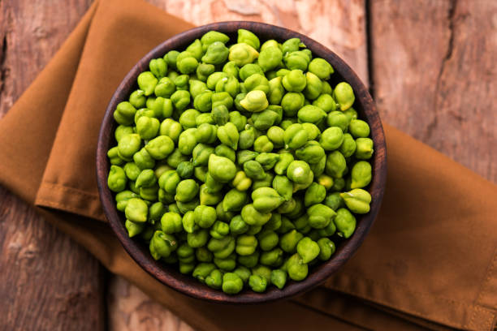
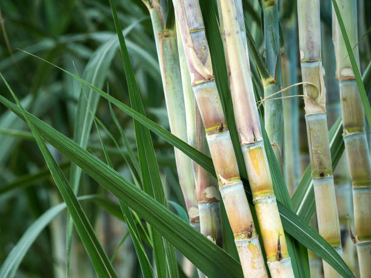

<html lang="en">

</html>

<head>
    <meta charset="UTF-8">
    <meta name="Generator" content="EditPlus®">
    <meta name="Author" content="">
    <meta name="Keywords" content="">
    <meta name="Description" content="">
    <meta name="viewport" content="width=device-width, initial-scale=1.0">
    <title>AD-GROWN</title>
    <style>
        @media (min-width: 1000px) {
            #a {
                display: flex;
            }

            .b {
                width: 280%;
            }

            .c {
                width: 180%;
            }
        }


        /* Style the container for the Google Translate Element */
        #google_translate_element_container {
            position: fixed;
            bottom: 10px;
            right: 10px;
            z-index: 9999;
            transition: box-shadow 0.3s ease;
            /* Add transition for a smoother effect */
        }

        /* Style the Google Translate Element */
        #google_translate_element {
            border: 1px solid rgba(255, 174, 0);
            /* Cyan border color */
            padding: 10px;
            background-color: #f0f8ff;
            /* AliceBlue background color */
            border-radius: 5px;
            box-shadow: 0 0 10px rgba(255, 174, 0);
            /* Initial box-shadow */
        }

        /* Add box-shadow when hovering over the container */
        #google_translate_element_container:hover {
            box-shadow: 0 0 5px rgb(255, 174, 0),
                0 0 25px rgb(255, 174, 0),
                0 0 50px rgb(255, 174, 0);
        }

        @media (max-width: 460px) {
            #imgX {
                height: 200px;
                width: 300px;
            }

        }
    </style>
    <script type="text/javascript"
        src="https://translate.google.com/translate_a/element.js?cb=googleTranslateElementInit"></script>
    <script type="text/javascript">
        function googleTranslateElementInit() {
            new google.translate.TranslateElement({ pageLanguage: 'tel', layout: google.translate.TranslateElement.InlineLayout }, 'google_translate_element');
        }
    </script>
</head>

<body>
    <div id="google_translate_element_container">
        <div id="google_translate_element"></div>
    </div>
    <!--మొక్కజొన్న అని కూడా పిలువబడే మొక్కజొన్న, ప్రపంచంలోని అనేక ప్రాంతాలలో ప్రధానమైన పంట.  మొక్కజొన్న యొక్క పెరుగుతున్న విధానం నాటడం నుండి కోత వరకు అనేక దశలను కలిగి ఉంటుంది.  మొక్కజొన్న సాగు విధానం యొక్క సంక్షిప్త అవలోకనం ఇక్కడ ఉంది:

 నేల తయారీ: 6.0-7.5 pHతో బాగా ఎండిపోయిన నేలలో మొక్కజొన్న బాగా పెరుగుతుంది.  మట్టిని 6-8 అంగుళాల లోతు వరకు దున్నాలి మరియు ఏవైనా కలుపు మొక్కలు లేదా రాళ్లను తొలగించాలి.

 నాటడం: మొక్కజొన్న సాధారణంగా వసంతకాలంలో పండిస్తారు, మంచు ప్రమాదం దాటిన తర్వాత.  విత్తనాలను 1-2 అంగుళాల లోతులో, 30-36 అంగుళాల దూరంలో ఉన్న వరుసలలో నాటాలి.

 అంకురోత్పత్తి: మొక్కజొన్న విత్తనాలు 7-10 రోజులలో మొలకెత్తుతాయి, నేల తేమగా మరియు ఉష్ణోగ్రత తగినంతగా ఉంటే.  విత్తనం ఒక చిన్న రూట్ మరియు రెమ్మను పంపుతుంది, ఇది చివరికి మొక్కజొన్న మొక్కగా పెరుగుతుంది.

 పెరుగుదల: మొక్కజొన్న మొక్క పెరుగుతూనే ఉంటుంది, ఆకులు మరియు కాండాలను అభివృద్ధి చేస్తుంది.  ఇది కూడా tassels మరియు చెవులు ఉత్పత్తి ప్రారంభమవుతుంది.

 పరాగసంపర్కం: మొక్క పైభాగంలో ఉన్న టాసెల్స్‌లో మగ పువ్వులు ఉంటాయి, చెవుల్లో ఆడ పువ్వులు ఉంటాయి.  టసెల్స్ నుండి పుప్పొడి చెవుల పట్టుపై పడినప్పుడు పరాగసంపర్కం జరుగుతుంది.

 చెవి అభివృద్ధి: చెవులు పరాగసంపర్కం జరిగిన తర్వాత, అవి కెర్నలు అభివృద్ధి చెందడం ప్రారంభిస్తాయి.  ప్రతి కెర్నల్ ఒక పట్టుకు జోడించబడి ఉంటుంది, ఇది చివరికి ఎండిపోయి పడిపోతుంది.

 హార్వెస్టింగ్: మొక్కజొన్న సాధారణంగా శరదృతువులో పండిస్తారు, చెవులు పూర్తిగా పరిపక్వం చెందినప్పుడు మరియు కాండాలు మరియు ఆకులు గోధుమ రంగులోకి మారుతాయి.  చెవులను చేతితో లేదా యాంత్రిక హార్వెస్టర్ ఉపయోగించి పండిస్తారు.

 మొత్తంమీద, మొక్కజొన్న సాగు విధానంలో జాగ్రత్తగా నేల తయారీ, సరైన సమయంలో నాటడం మరియు అంకురోత్పత్తి, పెరుగుదల, పరాగసంపర్కం మరియు చెవి అభివృద్ధికి సరైన పరిస్థితులను నిర్ధారించడం వంటివి ఉంటాయి.
jowar
జొన్న అని కూడా పిలువబడే జొన్న, దాని ధాన్యాల కోసం విస్తృతంగా పండించే తృణధాన్యాల పంట. జోవర్ పెరుగుదల ప్రక్రియను అనేక దశలుగా విభజించవచ్చు:

విత్తన ఎంపిక మరియు నాటడం: చేతితో లేదా మెకానికల్ ప్లాంటర్‌ని ఉపయోగించి నాటడానికి అధిక-నాణ్యత గల విత్తనాలను ఎంపిక చేస్తారు. విత్తనాలు బాగా తయారుచేసిన నేలలో, సాధారణంగా వరుసలలో పండిస్తారు.

అంకురోత్పత్తి మరియు మొలక దశ: నాటిన తరువాత, జొన్న గింజలు మొలకెత్తుతాయి మరియు మొలకలుగా పెరుగుతాయి. ఈ దశలో, బలమైన రూట్ వ్యవస్థను ఏర్పాటు చేయడానికి మరియు ఆరోగ్యకరమైన ఆకులను అభివృద్ధి చేయడానికి మొలకలకు తగినంత తేమ, వెచ్చదనం మరియు పోషకాలు అవసరం.

ఏపుగా పెరగడం: జొన్న మొక్కలు మంచి రూట్ వ్యవస్థను ఏర్పాటు చేసుకున్న తర్వాత, అవి ఏపుగా పెరగడంపై దృష్టి పెడతాయి. మొక్కలు పెద్దవిగా పెరుగుతాయి మరియు కిరణజన్య సంయోగక్రియ మరియు ధాన్యం ఉత్పత్తికి ముఖ్యమైన ఆకులు మరియు కొమ్మలను అభివృద్ధి చేస్తాయి. మొక్కలు ఆరోగ్యకరమైన పెరుగుదలను ప్రోత్సహించడానికి క్రమం తప్పకుండా నీటిపారుదల మరియు ఫలదీకరణం చేయబడతాయి.

పుష్పించే మరియు ధాన్యం ఏర్పడటం: దాదాపు 45-60 రోజుల పెరుగుదల తర్వాత, జొన్న మొక్కలు పుష్పాలను ఉత్పత్తి చేయడం ప్రారంభిస్తాయి. పువ్వులు గాలి లేదా స్వీయ-పరాగసంపర్కం ద్వారా పరాగసంపర్కం చేయబడతాయి. పరాగసంపర్కం తరువాత, పువ్వులు ధాన్యాలుగా అభివృద్ధి చెందుతాయి, ఇవి స్పైక్ లాంటి పానికిల్‌లో ఉంటాయి.

ధాన్యం పరిపక్వత మరియు హార్వెస్టింగ్: ధాన్యాలు పరిపక్వం చెందడానికి దాదాపు 90-120 రోజులు పడుతుంది, ఈ సమయంలో పానికిల్ లోపల ధాన్యాలు పెరుగుతాయి మరియు అభివృద్ధి చెందుతాయి. పానికిల్స్ ఆకుపచ్చ నుండి గోధుమ రంగులోకి మారుతాయి, అవి పూర్తిగా పరిపక్వం చెందాయని సూచిస్తున్నాయి. జొన్నను సాధారణంగా మొక్క నుండి కాయలను కత్తిరించి వాటిని నూర్పిడి చేయడం ద్వారా ధాన్యాలను మొక్కల పదార్థం నుండి వేరు చేయడం ద్వారా పండిస్తారు.

పంటకోత తర్వాత ప్రాసెసింగ్: పంట కోసిన తర్వాత, ధాన్యాలను శుభ్రం చేసి, ఏదైనా చెత్త లేదా దెబ్బతిన్న గింజలను తొలగించడానికి క్రమబద్ధీకరించబడతాయి. ధాన్యాలను ఆహారం, పశుగ్రాసం లేదా జీవ ఇంధన ఉత్పత్తికి ఉపయోగించవచ్చు.

మొత్తంమీద, జోవర్ యొక్క పెరుగుదల ఉష్ణోగ్రత, తేమ మరియు సూర్యకాంతి వంటి పర్యావరణ కారకాల సంక్లిష్ట పరస్పర చర్యను కలిగి ఉంటుంది, అలాగే మొక్క యొక్క పెరుగుదల మరియు అభివృద్ధిని నిర్ణయించే జన్యుపరమైన కారకాలు. ఆరోగ్యకరమైన మరియు ఉత్పాదక పంటను నిర్ధారించడానికి తగినంత నీటి నిర్వహణ, పోషకాల నిర్వహణ మరియు తెగులు నియంత్రణ చాలా ముఖ్యమైనవి.
సొర్గుమ్ 
పెడి 
చిల్లి 
మేజ్ -->
    <CENTER>
        <H1><strong>1. PIGEON PEA / 1.કબૂતર વટાણા</strong></H1>
    </CENTER>
    <center>
        
    </center>

    <DIV id="a" style="color:blue;justify-content:space-evenly;">
        <CENTER>
            <h2 class="notranslate" style="border:3px solid orange; color:BLACK;">
                <CENTER>
                    <h3>ENGLISH</h3>
                </CENTER>
                Pigeon pea, also known as "tur" or "arhar," is a significant pulse crop in India, valued for its
                nutritious seeds and adaptability to various soil types. Below is the step-by-step growing mechanism for
                pigeon pea from seed selection to harvesting:<br><br>

                1] <U>Seed Selection:</U> <br>Choose high-quality, disease-resistant seeds of
                pigeon pea. Popular varieties include "Bahar," "Asha," and "UPAS 120." Seeds should be inspected for
                size, color, and absence of damage.<br><br>


                2] <U>Soil Preparation:</U> <br>
                Pigeon pea thrives in well-drained, sandy loam to clayey soil with a pH of 6.0-7.5.
                The land should be cleared of weeds and debris. Incorporate organic matter such as compost or
                well-rotted manure into the soil to enhance fertility.<br><br>


                3] <U>Sowing:</U> <br>
                Pigeon pea is usually sown at the beginning of the monsoon season (June-July) in India. Seeds
                are planted 2-4 inches deep in rows spaced 30-45 cm apart. A spacing of 10-15 cm between seeds within
                the row is ideal for optimal growth.<br><br>


                4] <U>Germination:</U><br>
                After sowing, seeds require adequate moisture for germination, which usually occurs within
                7-10 days. Proper soil moisture is essential during this period to ensure good seedling
                emergence.<br><br>


                5] <U>Vegetative Growth:</U> <br>
                Once germination occurs, the plant enters a vegetative growth phase. Pigeon pea
                plants grow upright and can reach heights of 1-3 meters. Leaves are compound and alternate, providing a
                good canopy for photosynthesis.<br><br>

                6] <U>Flowering:</U><br>
                Pigeon pea typically begins flowering around 60-90 days after sowing. Flowers are usually
                yellow or white and attract various pollinators. Adequate pollination is crucial for fruit set.<br><br>

                7] <U>Pod Development:</U><br>
                After flowering, pods begin to form, usually containing 3-5 seeds each. This stage
                lasts about 30-40 days. Proper moisture and nutrient management during pod development are critical for
                maximizing yield.<br><br>

                8] <U>Pest and Disease Management:</U><br>
                Pigeon pea can be affected by pests such as pod borers and diseases like
                wilt and root rot. Regular monitoring is essential. Integrated pest management strategies, including
                crop rotation, use of resistant varieties, and organic pesticides, help control these issues.<br><br>

                9] <U>Seed Development:</U><br>
                As pods mature, the seeds inside grow and harden. The plant generally takes about
                100-180 days from sowing to reach maturity, depending on the variety and growing conditions.<br><br>

                10] <U>Harvesting:</U><br>
                Pigeon peas are harvested when the pods turn brown and dry, and the seeds rattle inside.
                This usually occurs 4-6 months after sowing. Harvesting is done manually or with sickles, cutting the
                plants at the base.<br><br>

                11] <U>Post-Harvest Processing:</U><br>
                After harvesting, the plants should be dried in the sun for a few days to
                reduce moisture content. Once dried, threshing is done to separate the seeds from the pods.<br><br>

                12] <U>Storage:</U><br>
                Seeds should be cleaned and stored in a cool, dry place in airtight containers to prevent
                moisture absorption and pest infestations. Proper storage ensures the seeds remain viable for future
                planting.<br><br>

                Throughout the growth cycle, pigeon pea plants require well-drained soil, moderate watering, and careful
                management to ensure a healthy and productive yield.
            </h2>
        </CENTER>

        <div class="c" id="translateThisSection" style="color:blACK; text-align:center;">
            <center>
                <h3 style="border:3px solid orange; color:BLACK;">
                    <CENTER>
                        <h1>ગુજરાતી</h1>
                    </CENTER>
                    કબૂતર વટાણા, જેને "તુર" અથવા "અરહર" તરીકે પણ ઓળખવામાં આવે છે, તે ભારતમાં એક નોંધપાત્ર કઠોળ પાક છે,
                    જે તેના પૌષ્ટિક બીજ અને વિવિધ પ્રકારની જમીનમાં અનુકૂલનક્ષમતા માટે મૂલ્યવાન છે. બીજની પસંદગીથી લઈને
                    લણણી સુધી કબૂતર વટાણા માટે પગલું-દર-પગલાં ઉગાડવાની પદ્ધતિ નીચે છે:<br><br>
                    1] <U>બીજની પસંદગી: </U> <br>કબૂતર વટાણાના ઉચ્ચ ગુણવત્તાવાળા, રોગ પ્રતિરોધક બીજ પસંદ કરો. લોકપ્રિય
                    જાતોમાં "બહાર," "આશા" અને "UPAS 120" નો સમાવેશ થાય છે. કદ, રંગ અને નુકસાનની ગેરહાજરી માટે બીજનું
                    નિરીક્ષણ કરવું જોઈએ.<br><br>
                    2] <U>જમીનની તૈયારી: </U> <br>કબૂતરના વટાણા 6.0-7.5 ની pH સાથે સારી રીતે પાણીયુક્ત, રેતાળ લોમથી
                    માટીની જમીનમાં ખીલે છે. જમીનને નીંદણ અને કાટમાળથી સાફ કરવી જોઈએ. ફળદ્રુપતા વધારવા માટે માટીમાં
                    કાર્બનિક પદાર્થો જેમ કે ખાતર અથવા સારી રીતે સડેલા ખાતરનો સમાવેશ કરો.<br><br>
                    3] <U>વાવણી: </U> <br>કબૂતર વટાણાની વાવણી સામાન્ય રીતે ભારતમાં ચોમાસાની ઋતુની શરૂઆતમાં (જૂન-જુલાઈ)
                    કરવામાં આવે છે. બીજને 30-45 સે.મી.ના અંતરે 2-4 ઈંચ ઊંડા પંક્તિઓમાં વાવવામાં આવે છે. પંક્તિમાં બીજ
                    વચ્ચે 10-15 સે.મી.નું અંતર શ્રેષ્ઠ વૃદ્ધિ માટે આદર્શ છે.<br><br>
                    4] <U> અંકુરણ: </U> <br>વાવણી પછી, બીજને અંકુરણ માટે પૂરતા પ્રમાણમાં ભેજની જરૂર પડે છે, જે સામાન્ય
                    રીતે 7-10 દિવસમાં થાય છે. આ સમયગાળા દરમિયાન સારી રોપાઓ ઉદભવે તેની ખાતરી કરવા માટે જમીનની યોગ્ય ભેજ
                    જરૂરી છે.<br><br>
                    5] <U> વનસ્પતિ વૃદ્ધિ: </U> <br>એકવાર અંકુરણ થાય છે, છોડ વનસ્પતિ વૃદ્ધિના તબક્કામાં પ્રવેશ કરે છે.
                    કબૂતર વટાણાના છોડ સીધા ઉગે છે અને 1-3 મીટરની ઊંચાઈ સુધી પહોંચી શકે છે. પાંદડા સંયોજન અને વૈકલ્પિક
                    હોય છે, જે પ્રકાશસંશ્લેષણ માટે સારી છત્ર પૂરી પાડે છે.<br><br>
                    6] <U>ફ્લાવરિંગ: </U> <br>કબૂતર વટાણા સામાન્ય રીતે વાવણી પછી લગભગ 60-90 દિવસની આસપાસ ફૂલ આવવાનું શરૂ
                    કરે છે. ફૂલો સામાન્ય રીતે પીળા અથવા સફેદ હોય છે અને વિવિધ પરાગ રજકોને આકર્ષે છે. ફળોના સમૂહ માટે
                    પર્યાપ્ત પરાગનયન મહત્વપૂર્ણ છે.<br><br>
                    7] <U> શીંગોનો વિકાસ: </U> <br>ફૂલ આવ્યા પછી, શીંગો બનવાનું શરૂ થાય છે, જેમાં સામાન્ય રીતે 3-5 બીજ
                    હોય ​​છે. આ તબક્કો લગભગ 30-40 દિવસ ચાલે છે. ફળોના વિકાસ દરમિયાન યોગ્ય ભેજ અને પોષક તત્વોનું સંચાલન
                    મહત્તમ ઉપજ માટે મહત્વપૂર્ણ છે.<br><br>
                    8] <U>જંતુ અને રોગ વ્યવસ્થાપન: </U> <br>કબૂતરના વટાણાને પોડ બોરર્સ જેવી જીવાતો અને મરડો અને મૂળના
                    સડો જેવા રોગોથી અસર થઈ શકે છે. નિયમિત દેખરેખ જરૂરી છે. પાક પરિભ્રમણ, પ્રતિરોધક જાતોનો ઉપયોગ અને
                    કાર્બનિક જંતુનાશકો સહિત સંકલિત જંતુ વ્યવસ્થાપન વ્યૂહરચનાઓ આ મુદ્દાઓને નિયંત્રિત કરવામાં મદદ કરે
                    છે.<br><br>
                    9] <U>બીજ વિકાસ: </U> <br>જેમ જેમ શીંગો પરિપક્વ થાય છે તેમ તેમ અંદરના બીજ વધે છે અને સખત થાય છે. છોડ
                    સામાન્ય રીતે વાવણીથી પરિપક્વતા સુધી પહોંચવામાં લગભગ 100-180 દિવસ લે છે, જે વિવિધતા અને વધતી જતી
                    પરિસ્થિતિઓ પર આધાર રાખે છે.<br><br>
                    10] <U>લણણી: </U> <br>કબૂતર વટાણાની લણણી ત્યારે થાય છે જ્યારે શીંગો ભૂરા અને સુકાઈ જાય છે અને દાણા
                    અંદર ખડકાઈ જાય છે. આ સામાન્ય રીતે વાવણીના 4-6 મહિના પછી થાય છે. કાપણી જાતે અથવા સિકલ વડે કરવામાં આવે
                    છે, છોડને પાયા પર કાપીને.<br><br>
                    11] <U>કાપણી પછીની પ્રક્રિયા: </U> <br>લણણી પછી, ભેજનું પ્રમાણ ઘટાડવા માટે છોડને થોડા દિવસો માટે
                    તડકામાં સૂકવવા જોઈએ. એકવાર સૂકાઈ જાય પછી, શીંગોમાંથી બીજને અલગ કરવા માટે થ્રેસીંગ કરવામાં આવે
                    છે.<br><br>
                    12] <U>સંગ્રહ: </U> <br>ભેજનું શોષણ અને જીવાતોના ઉપદ્રવને રોકવા માટે બીજને સાફ કરીને ઠંડી, સૂકી
                    જગ્યાએ હવાચુસ્ત કન્ટેનરમાં સંગ્રહિત કરવા જોઈએ. યોગ્ય સંગ્રહ સુનિશ્ચિત કરે છે કે બીજ ભવિષ્યના વાવેતર
                    માટે યોગ્ય રહે.<br><br>

                    સમગ્ર વૃદ્ધિ ચક્ર દરમિયાન, કબૂતરના વટાણાના છોડને તંદુરસ્ત અને ઉત્પાદક ઉપજ સુનિશ્ચિત કરવા માટે સારી
                    રીતે પાણીયુક્ત જમીન, મધ્યમ પાણી અને સાવચેતીપૂર્વક વ્યવસ્થાપનની જરૂર પડે છે.
                </h3>
            </center>
            <audio controls src="TELANGANA/TP AUDIO\jowar.m4a"></audio>
            <h2>સાંભળો</h2>
        </div>

    </DIV>

    <CENTER>
        <H1><strong>2. BLACK GRAM / 2.કાળા ગ્રામ</strong></H1>
    </CENTER>
    <center>
        
    </center>

    <DIV id="a" style="color:blue;  justify-content:space-evenly;">
        <CENTER>
            <h2 class="notranslate" style="border:3px solid orange; color:BLACK;">
                <CENTER>
                    <h3>ENGLISH</h3>
                </CENTER>

                Black gram, also known as urad dal, is a valuable legume in Indian agriculture, known for its high
                protein content and various culinary uses. Here’s a detailed step-by-step mechanism for growing black
                gram from seed selection to harvesting:<br><br>
                1] <U> Seed Selection and Sowing:</U> <br>
                Start with selecting high-quality, disease-free black gram seeds. Seeds
                should be treated with fungicides to prevent soil-borne diseases. The optimal time for sowing is during
                the kharif season (June to July) when the soil temperature is warm. Seeds are sown 2-3 cm deep in
                well-prepared, well-drained soil, ideally in rows spaced 30-45 cm apart.<br><br>
                2] <U> Germination:</U> <br>
                Upon sowing, black gram seeds absorb moisture and begin to germinate. This process takes
                about 5-7 days under suitable conditions, with the radicle emerging first, followed by the shoot. Soil
                temperature around 25°C to 30°C promotes good germination.<br><br>
                3] <U> Vegetative Growth: </U> <br>
                After germination, the plant enters the vegetative growth phase. Black gram develops
                a strong root system and erect stems with broad leaves. The plant typically grows to about 60-90 cm in
                height. Adequate sunlight and moisture are crucial during this stage to ensure healthy leaf
                development.<br><br>
                4] <U> Flowering:</U> <br>
                Approximately 30-40 days after sowing, the plant begins to flower. The flowers are small and
                white, appearing in clusters. Black gram plants are primarily self-pollinating, which means they do not
                rely on external pollinators. This phase lasts for about 2-3 weeks.<br><br>
                5] <U> Pod Formation: </U> <br>
                After successful pollination, the flowers develop into pods. Each pod usually contains
                2-6 seeds. This stage is critical for the development of seeds, and it typically occurs 60-70 days after
                sowing. The plants should be monitored for moisture needs, as water stress can adversely affect pod
                formation.<br><br>
                6] <U> Pest and Disease Management: </U> <br>
                Black gram is susceptible to pests like aphids and diseases such as blight
                and wilt. Regular monitoring is essential. Integrated Pest Management (IPM) strategies, including the
                use of neem oil and insecticidal soaps, can effectively control pests. Crop rotation and resistant
                varieties help manage diseases.<br><br>
                7] <U> Seed Development: </U> <br>
                As the pods mature, seeds inside grow and harden. This maturation process lasts for
                about 20-30 days. The plant begins to yellow and dry out, indicating that the seeds are nearing
                maturity. Watering should be reduced to promote drying.<br><br>
                8] <U> Harvesting: </U> <br>
                Harvesting occurs when the pods are fully mature and dry, typically 90-110 days after
                sowing. The plants are cut at the base, and the pods are allowed to dry further in the field for a few
                days. Manual or mechanical threshing is used to separate the seeds from the pods.<br><br>
                9] <U> Post-Harvest Processing: </U> <br>
                After threshing, the seeds are cleaned and dried to remove any residual
                moisture. Proper storage in cool, dry conditions helps prevent spoilage and pest infestations.
                Containers should be airtight to protect against humidity.<br><br>
                10] <U> Pest Control in Storage: </U> <br>
                To ensure the longevity of stored black gram, use insect repellents or storage
                methods such as diatomaceous earth to prevent pest damage. Regular inspections are essential to maintain
                seed quality.<br><br>
                Throughout its growth, black gram thrives in warm climates with well-drained soils. Adequate care during
                each phase of its development can lead to a successful and bountiful harvest.
            </h2>
        </CENTER>
        <div class="b" id="translateThisSection" style="color:blACK;   text-align:center;float:right;">
            <center>
                <h3 style="border:3px solid orange; color:BLACK;">
                    <CENTER>
                        <h1>ગુજરાતી</h1>
                    </CENTER>
                    કાળા ચણા, જેને અડદની દાળ તરીકે પણ ઓળખવામાં આવે છે, તે ભારતીય કૃષિમાં એક મૂલ્યવાન શીંગ છે, જે તેની
                    ઉચ્ચ પ્રોટીન સામગ્રી અને વિવિધ રાંધણ ઉપયોગો માટે જાણીતી છે. બીજની પસંદગીથી લણણી સુધી કાળા ચણા ઉગાડવા
                    માટેની વિગતવાર પગલું-દર-પગલાની પદ્ધતિ અહીં છે:<br><br>

                    1] <U> બીજની પસંદગી અને વાવણી: </U> <br>ઉચ્ચ ગુણવત્તાવાળા, રોગમુક્ત કાળા ચણાના બીજ પસંદ કરીને શરૂઆત
                    કરો. જમીનથી થતા રોગોને રોકવા માટે બીજને ફૂગનાશક દવાઓથી સારવાર કરવી જોઈએ. વાવણી માટેનો શ્રેષ્ઠ સમય
                    ખરીફ સીઝન (જૂન થી જુલાઈ) દરમિયાન છે જ્યારે જમીનનું તાપમાન ગરમ હોય છે. બીજ સારી રીતે તૈયાર કરેલી,
                    સારી રીતે પાણીયુક્ત જમીનમાં 2-3 સેમી ઊંડે વાવવામાં આવે છે, આદર્શ રીતે 30-45 સે.મી.ના અંતરે આવેલી
                    હરોળમાં.<br><br>

                    2] <U> અંકુરણ: </U> <br>વાવણી પર, કાળા ચણાના બીજ ભેજને શોષી લે છે અને અંકુરિત થવાનું શરૂ કરે છે. આ
                    પ્રક્રિયામાં અનુકુળ પરિસ્થિતિઓમાં લગભગ 5-7 દિવસ લાગે છે, જેમાં પહેલા રેડિકલ બહાર આવે છે, ત્યારબાદ
                    અંકુર થાય છે. 25°C થી 30°C આસપાસ જમીનનું તાપમાન સારા અંકુરણને પ્રોત્સાહન આપે છે.<br><br>

                    3] <U> વનસ્પતિ વૃદ્ધિ: </U> <br>અંકુરણ પછી, છોડ વનસ્પતિ વૃદ્ધિના તબક્કામાં પ્રવેશે છે. કાળા ચણા
                    મજબૂત રુટ સિસ્ટમ વિકસાવે છે અને પહોળા પાંદડા સાથે ટટ્ટાર દાંડી બનાવે છે. છોડ સામાન્ય રીતે આશરે 60-90
                    સેમી ઊંચાઈ સુધી વધે છે. તંદુરસ્ત પાંદડાના વિકાસને સુનિશ્ચિત કરવા માટે આ તબક્કા દરમિયાન પૂરતો
                    સૂર્યપ્રકાશ અને ભેજ નિર્ણાયક છે.<br><br>

                    4] <U>ફ્લાવરિંગ: </U> <br>વાવણીના લગભગ 30-40 દિવસ પછી, છોડ ફૂલ આવવાનું શરૂ કરે છે. ફૂલો નાના અને
                    સફેદ હોય છે, ક્લસ્ટરોમાં દેખાય છે. કાળા ચણાના છોડ મુખ્યત્વે સ્વ-પરાગાધાન કરે છે, જેનો અર્થ છે કે તેઓ
                    બાહ્ય પરાગ રજકો પર આધાર રાખતા નથી. આ તબક્કો લગભગ 2-3 અઠવાડિયા સુધી ચાલે છે.<br><br>

                    5] <U>શીંગોની રચના: </U> <br>સફળ પરાગનયન પછી, ફૂલો શીંગોમાં વિકસે છે. દરેક પોડમાં સામાન્ય રીતે 2-6
                    બીજ હોય ​​છે. આ તબક્કો બીજના વિકાસ માટે મહત્વપૂર્ણ છે, અને તે સામાન્ય રીતે વાવણીના 60-70 દિવસ પછી
                    થાય છે. ભેજની જરૂરિયાતો માટે છોડનું નિરીક્ષણ કરવું જોઈએ, કારણ કે પાણીની તાણ શીંગની રચનાને પ્રતિકૂળ
                    અસર કરી શકે છે.<br><br>

                    6] <U>જંતુ અને રોગ વ્યવસ્થાપન: </U> <br>કાળા ચણા એફિડ જેવી જીવાતો અને ફૂગ અને મરડો જેવા રોગો માટે
                    સંવેદનશીલ છે. નિયમિત દેખરેખ જરૂરી છે. લીમડાના તેલ અને જંતુનાશક સાબુનો ઉપયોગ સહિત સંકલિત જંતુ
                    વ્યવસ્થાપન (IPM) વ્યૂહરચનાઓ અસરકારક રીતે જીવાતોને નિયંત્રિત કરી શકે છે. પાકનું પરિભ્રમણ અને
                    પ્રતિકારક જાતો રોગોનું સંચાલન કરવામાં મદદ કરે છે.<br><br>

                    7] <U>બીજ વિકાસ: </U> <br>જેમ જેમ શીંગો પરિપક્વ થાય છે તેમ તેમ અંદરના બીજ વધે છે અને સખત થાય છે. આ
                    પરિપક્વતા પ્રક્રિયા લગભગ 20-30 દિવસ સુધી ચાલે છે. છોડ પીળો અને સૂકવવા લાગે છે, જે દર્શાવે છે કે બીજ
                    પરિપક્વતાની નજીક છે. સૂકવણીને પ્રોત્સાહન આપવા માટે પાણી આપવું ઘટાડવું જોઈએ.
                    <br><br>

                    8] <U>લણણી: </U> <br>લણણી ત્યારે થાય છે જ્યારે શીંગો સંપૂર્ણપણે પરિપક્વ અને સૂકાઈ જાય, સામાન્ય રીતે
                    વાવણીના 90-110 દિવસ પછી. છોડને પાયામાં કાપવામાં આવે છે, અને શીંગોને થોડા દિવસો માટે ખેતરમાં વધુ
                    સૂકવવા દેવામાં આવે છે. શીંગોમાંથી બીજને અલગ કરવા માટે મેન્યુઅલ અથવા યાંત્રિક થ્રેસીંગનો ઉપયોગ થાય
                    છે.<br><br>

                    9] <U>કાપણી પછીની પ્રક્રિયા: </U> <br>થ્રેશિંગ પછી, કોઈપણ શેષ ભેજને દૂર કરવા માટે બીજને સાફ અને
                    સૂકવવામાં આવે છે. ઠંડી, સૂકી સ્થિતિમાં યોગ્ય સંગ્રહ બગાડ અને જીવાતોના ઉપદ્રવને રોકવામાં મદદ કરે છે.
                    ભેજ સામે રક્ષણ માટે કન્ટેનર હવાચુસ્ત હોવા જોઈએ.
                    <br><br>

                    10]<U>સ્ટોરેજમાં પેસ્ટ કંટ્રોલ: </U> <br>સંગ્રહિત કાળા ચણાના લાંબા આયુષ્યની ખાતરી કરવા માટે,
                    જીવાતોને થતા નુકસાનને રોકવા માટે જંતુનાશક અથવા ડાયટોમેસીયસ અર્થ જેવી સ્ટોરેજ પદ્ધતિઓનો ઉપયોગ કરો.
                    બીજની ગુણવત્તા જાળવવા માટે નિયમિત તપાસ જરૂરી છે.<br><br>

                    તેની સમગ્ર વૃદ્ધિ દરમિયાન, કાળા ચણા સારી રીતે પાણીયુક્ત જમીન સાથે ગરમ આબોહવામાં ખીલે છે. તેના
                    વિકાસના દરેક તબક્કા દરમિયાન પર્યાપ્ત કાળજી સફળ અને પુષ્કળ લણણી તરફ દોરી શકે છે.

                </h3>
            </center>
            <audio controls src="TELANGANA/TP AUDIO\paddy.m4a"></audio>
            <h2>સાંભળો</h2>
        </div>

    </DIV>

    <CENTER>
        <H1><strong>3. GREEN GRAM / 3.લીલા ચણા</strong></H1>
    </CENTER>
    <center>
        
    </center>
    <DIV id="a" style="color:blue; justify-content:space-evenly;">
        <CENTER>
            <h2 class="notranslate" style="border:3px solid orange; color:BLACK;">
                <CENTER>
                    <h3>ENGLISH</h3>
                </CENTER>
                Green gram, also known as moong dal, is a highly nutritious legume widely cultivated in India. It is
                valued for its protein content and quick growth cycle. Below is a detailed step-by-step mechanism for
                growing green gram from seed selection to harvesting:<br><br>
                1] <U>Seed Selection and Sowing:</U> <br>
                Select high-quality, disease-free green gram seeds. It’s important to treat seeds with fungicides to
                minimize the risk of soil-borne diseases. Green gram is typically sown in the kharif season (June to
                July) or rabi season (October to November). Seeds are sown about 2-3 cm deep in well-drained soil, with
                rows spaced 30-45 cm apart.<br><br>
                2] <U>Germination:</U> <br>
                After sowing, the seeds absorb moisture and begin germinating. This process usually takes about 5-7
                days, provided the soil temperature is between 25°C and 30°C. The radicle (embryonic root) emerges
                first, followed by the shoot.<br><br>
                3] <U>Vegetative Growth:</U> <br>
                Once germinated, the plant enters the vegetative growth phase. Green gram develops a robust root system
                and erect stems with trifoliate leaves. The plant typically grows to a height of 30-60 cm. Adequate
                sunlight and moisture are crucial for healthy growth during this phase.<br><br>
                4] <U>Flowering:</U> <br>
                About 30-40 days after sowing, the plant begins to flower. The flowers are small, yellow, and often
                appear in clusters. Green gram is primarily self-pollinating, which means it does not require external
                pollinators. Flowering lasts for about 2-3 weeks, and favorable weather conditions are essential for
                optimal pollination.<br><br>
                5] <U>Pod Formation:</U> <br>
                Following successful pollination, flowers develop into pods. Each pod usually contains 4-6 seeds. This
                phase occurs approximately 60-70 days after sowing. Adequate moisture is important during pod formation
                to ensure good seed development.<br><br>
                6] <U>Pest and Disease Management:</U> <br>
                Green gram can be affected by pests such as aphids, pod borers, and diseases like bacterial blight and
                downy mildew. Regular monitoring is vital. Integrated Pest Management (IPM) practices, including neem
                oil applications and crop rotation, can effectively manage these issues.<br><br>
                7] <U>Seed Development:</U> <br>
                As pods mature, the seeds inside grow and harden over a period of about 20-30 days. The plants gradually
                begin to yellow and dry out, indicating the seeds are nearing maturity. Watering should be minimized to
                promote proper drying of the plants.<br><br>
                8] <U>Harvesting:</U> <br>
                Harvesting is done when the pods are fully mature and dry, typically 90-100 days after sowing. The
                plants are cut at the base, and the pods are left to dry in the field for a few days. Threshing can be
                done manually or mechanically to separate the seeds from the pods.<br><br>
                9] <U>Post-Harvest Processing:</U> <br>
                After threshing, the seeds are cleaned and dried to reduce moisture content. Proper storage is crucial
                to prevent spoilage and pest infestations. Seeds should be kept in cool, dry conditions, ideally in
                airtight containers.<br><br>
                10] <U>Pest Control in Storage:</U> <br>
                To protect stored green gram, consider using natural pest repellents or storage techniques like
                diatomaceous earth. Regular inspections of stored seeds are essential to maintain quality and prevent
                damage from insects.<br><br>

                Throughout its growth, green gram benefits from well-drained soil, adequate sunlight, and proper care
                during each phase to ensure a successful harvest.
            </h2>
        </CENTER>
        <div class="b" id="translateThisSection" style="color:blACK;   text-align:center;float:right;">
            <center>
                <h3 style="border:3px solid orange; color:BLACK;">
                    <CENTER>
                        <h1>ગુજરાતી</h1>
                    </CENTER>
                    લીલા ચણા, જેને મગની દાળ તરીકે પણ ઓળખવામાં આવે છે, તે ભારતમાં વ્યાપકપણે ઉગાડવામાં આવતી અત્યંત પૌષ્ટિક
                    શીંગ છે. તે તેની પ્રોટીન સામગ્રી અને ઝડપી વૃદ્ધિ ચક્ર માટે મૂલ્યવાન છે. લીલા ચણા ઉગાડવા માટે બીજની
                    પસંદગીથી લણણી સુધીની વિગતવાર પગલું-દર-પગલાની પદ્ધતિ નીચે છે:<br><br>
                    1] <U>બીજની પસંદગી અને વાવણી: </U> <br>ઉચ્ચ ગુણવત્તાવાળા, રોગમુક્ત લીલા ચણાના બીજ પસંદ કરો. જમીનથી
                    થતા રોગોના જોખમને ઘટાડવા માટે ફૂગનાશકો સાથે બીજની સારવાર કરવી મહત્વપૂર્ણ છે. લીલા ચણા સામાન્ય રીતે
                    ખરીફ સીઝન (જૂન થી જુલાઈ) અથવા રવિ સીઝન (ઓક્ટોબર થી નવેમ્બર) માં વાવવામાં આવે છે. સારી રીતે નિકાલવાળી
                    જમીનમાં લગભગ 2-3 સેમી ઊંડે બીજ વાવવામાં આવે છે, જેમાં પંક્તિઓ 30-45 સે.મી.ના અંતરે હોય છે.<br><br>

                    2] <U> અંકુરણ: </U> <br>વાવણી પછી, બીજ ભેજને શોષી લે છે અને અંકુરિત થવાનું શરૂ કરે છે. આ
                    પ્રક્રિયામાં સામાન્ય રીતે 5-7 દિવસનો સમય લાગે છે, જો જમીનનું તાપમાન 25°C અને 30°C ની વચ્ચે હોય.
                    રેડિકલ (ગર્ભ મૂળ) પ્રથમ બહાર આવે છે, ત્યારબાદ અંકુર થાય છે.<br><br>

                    3] <U>વનસ્પતિ વૃદ્ધિ: </U> <br>એકવાર અંકુરિત થયા પછી, છોડ વનસ્પતિ વૃદ્ધિના તબક્કામાં પ્રવેશ કરે છે.
                    લીલા ચણા એક મજબૂત રુટ સિસ્ટમ વિકસાવે છે અને ટ્રાઇફોલિએટ પાંદડા સાથે ટટ્ટાર દાંડી બનાવે છે. છોડ
                    સામાન્ય રીતે 30-60 સે.મી.ની ઊંચાઈ સુધી વધે છે. આ તબક્કા દરમિયાન તંદુરસ્ત વૃદ્ધિ માટે પૂરતો
                    સૂર્યપ્રકાશ અને ભેજ નિર્ણાયક છે.<br><br>

                    4] <U>ફ્લાવરિંગ: </U> <br>વાવણી પછી લગભગ 30-40 દિવસ પછી, છોડ ફૂલ આવવાનું શરૂ કરે છે. ફૂલો નાના, પીળા
                    હોય છે અને ઘણી વખત ક્લસ્ટરોમાં દેખાય છે. લીલા ચણા મુખ્યત્વે સ્વ-પરાગાધાન કરે છે, જેનો અર્થ છે કે
                    તેને બાહ્ય પરાગ રજકોની જરૂર નથી. ફૂલો લગભગ 2-3 અઠવાડિયા સુધી ચાલે છે, અને શ્રેષ્ઠ પરાગનયન માટે
                    અનુકૂળ હવામાન આવશ્યક છે.<br><br>

                    5] <U>શીંગોની રચના: </U> <br>સફળ પરાગનયન પછી, ફૂલો શીંગોમાં વિકસે છે. દરેક પોડમાં સામાન્ય રીતે 4-6
                    બીજ હોય ​​છે. આ તબક્કો વાવણીના લગભગ 60-70 દિવસ પછી થાય છે. બીજના સારા વિકાસને સુનિશ્ચિત કરવા માટે
                    પોડની રચના દરમિયાન પૂરતો ભેજ મહત્વપૂર્ણ છે.<br><br>

                    6] <U>જંતુઓ અને રોગ વ્યવસ્થાપન: </U> <br>લીલા ચણાને એફિડ્સ, પોડ બોરર્સ અને બેક્ટેરિયલ બ્લાઇટ અને
                    ડાઉની માઇલ્ડ્યુ જેવા રોગોથી અસર થઈ શકે છે. નિયમિત દેખરેખ મહત્વપૂર્ણ છે. લીમડાના તેલનો ઉપયોગ અને
                    પાકના પરિભ્રમણ સહિતની સંકલિત જંતુ વ્યવસ્થાપન (IPM) પદ્ધતિઓ આ મુદ્દાઓને અસરકારક રીતે સંચાલિત કરી શકે
                    છે.<br><br>

                    7] <U>બીજ વિકાસ: </U> <br>જેમ જેમ શીંગો પરિપક્વ થાય છે તેમ, અંદરના બીજ લગભગ 20-30 દિવસના સમયગાળામાં
                    વધે છે અને સખત બને છે. છોડ ધીમે ધીમે પીળા અને સુકાઈ જવા લાગે છે, જે દર્શાવે છે કે બીજ પરિપક્વતાની
                    નજીક છે. છોડના યોગ્ય સૂકવણીને પ્રોત્સાહન આપવા માટે પાણી આપવું ઘટાડવું જોઈએ.<br><br>

                    8] <U> લણણી: </U> <br>લણણી ત્યારે કરવામાં આવે છે જ્યારે શીંગો સંપૂર્ણપણે પરિપક્વ અને સુકાઈ જાય છે,
                    સામાન્ય રીતે વાવણીના 90-100 દિવસ પછી. છોડને પાયામાં કાપવામાં આવે છે, અને શીંગોને થોડા દિવસો માટે
                    ખેતરમાં સૂકવવા માટે છોડી દેવામાં આવે છે. શીંગોમાંથી બીજને અલગ કરવા માટે થ્રેસીંગ જાતે અથવા યાંત્રિક
                    રીતે કરી શકાય છે.<br><br>

                    9] <U>કાપણી પછીની પ્રક્રિયા: </U> <br>થ્રેશિંગ પછી, ભેજ ઘટાડવા માટે બીજને સાફ અને સૂકવવામાં આવે છે.
                    બગાડ અને જીવાતોના ઉપદ્રવને રોકવા માટે યોગ્ય સંગ્રહ મહત્વપૂર્ણ છે. બીજને ઠંડી, સૂકી સ્થિતિમાં, આદર્શ
                    રીતે હવાચુસ્ત કન્ટેનરમાં રાખવા જોઈએ.<br><br>

                    10] <U>સ્ટોરેજમાં પેસ્ટ કંટ્રોલ: </U> <br>સંગ્રહિત લીલા ચણાને બચાવવા માટે, કુદરતી જંતુનાશક અથવા
                    ડાયટોમેસિયસ અર્થ જેવી સ્ટોરેજ તકનીકોનો ઉપયોગ કરવાનું વિચારો. ગુણવત્તા જાળવવા અને જંતુઓથી થતા
                    નુકસાનને રોકવા માટે સંગ્રહિત બીજની નિયમિત તપાસ જરૂરી છે.<br><br>

                    તેની સમગ્ર વૃદ્ધિ દરમિયાન, સફળ પાકની ખાતરી કરવા માટે દરેક તબક્કા દરમિયાન સારી રીતે પાણી ભરેલી જમીન,
                    પર્યાપ્ત સૂર્યપ્રકાશ અને યોગ્ય કાળજીથી લીલા ચણાને ફાયદો થાય છે.
                </h3>
            </center>
            <audio controls src="TELANGANA/TP AUDIO\cotton.m4a"></audio>
            <h2>સાંભળો</h2>
        </div>


    </DIV>

    <CENTER>
        <H1><strong>4. GROUNDNUT / 4.મગફળી</strong></H1>
    </CENTER>
    <center>
        
    </center>

    <DIV id="a" style="color:blue;  justify-content:space-evenly;">
        <CENTER>
            <h2 class="notranslate" style="border:3px solid orange; color:BLACK;">
                <CENTER>
                    <h3>ENGLISH</h3>
                </CENTER>
                Groundnuts, commonly known as peanuts, are a leguminous crop that is widely cultivated in India. They
                are valued for their edible seeds, oil, and protein content. Below is the step-by-step growing mechanism
                for groundnuts from seed selection to harvesting:<br><br>
                1] <U> Seed Selection:</U> <br>
                Groundnut cultivation begins with the selection of high-quality seeds that are disease-free and have
                high germination rates. Varieties should be chosen based on local conditions and desired yield.
                Certified seeds from reputable sources are recommended.<br><br>
                2] <U> Soil Preparation:</U> <br>
                Groundnuts prefer well-drained, sandy loam to loamy soil. Before planting, the soil should be plowed and
                leveled. Incorporating organic matter, such as compost, improves soil fertility and structure. Soil pH
                should be maintained between 6.0 and 6.5 for optimal growth.<br><br>
                3] <U> Sowing: </U> <br>
                Groundnut seeds are typically sown at the beginning of the monsoon season, around June to July in India.
                Seeds should be planted 1-2 inches deep, with a spacing of 20-30 cm between plants and rows. This
                ensures adequate air circulation and sunlight.<br><br>
                4] <U> Germination:</U> <br>
                Germination occurs within 7-10 days after sowing, depending on soil moisture and
                temperature. The seed absorbs water, swelling and eventually leading to the emergence of the shoot and
                root. Adequate soil moisture is critical during this phase.<br><br>
                5] <U> Vegetative Growth: </U> <br>
                After germination, groundnut plants enter a rapid vegetative growth phase. They
                develop a sprawling habit, producing numerous leaves that capture sunlight for photosynthesis. Root
                development is crucial, as groundnuts are unique in that they form pegs that grow into the soil.<br><br>
                6] <U> Flowering: </U> <br>
                Groundnut plants typically flower about 30-40 days after sowing. The flowers are small,
                yellow, and grow close to the ground. After pollination, the fertilized flowers develop into pegs, which
                elongate and penetrate the soil to form pods.<br><br>
                7] <U> Pod Formation: </U> <br>
                The pegs that grow into the soil develop into pods, each containing 1-4 seeds. This
                process occurs about 60-90 days after planting. The plant requires adequate moisture and nutrients
                during this critical phase to support pod development.<br><br>
                8] <U> Water and Nutrient Management: </U> <br>
                Groundnuts require moderate irrigation, particularly during flowering and
                pod development. Fertilization with balanced NPK (nitrogen, phosphorus, potassium) fertilizers is
                essential to ensure healthy growth. Organic amendments can further enhance soil fertility.<br><br>
                9] <U> Pest and Disease Management: </U> <br>
                Common pests include leaf minor and thrips, while diseases like wilt and
                rust can affect the crop. Regular monitoring is essential. Integrated Pest Management (IPM) strategies,
                including crop rotation and biological control, can help manage pests effectively.<br><br>
                10] <U> Maturation: </U> <br>
                Groundnuts typically mature about 90-150 days after planting, depending on the variety. The
                leaves begin to yellow, indicating that the pods are ready for harvest. Proper timing is crucial to
                prevent over-maturation, which can lead to pod splitting.<br><br>
                11] <U> Harvesting: </U> <br>
                Harvesting is done manually or mechanically, depending on the scale of cultivation. The
                plants are carefully uprooted to avoid damaging the pods. Harvesting should occur on a dry day to
                minimize soil clinging to the pods.<br><br>
                12] <U> Post-Harvest Processing: </U> <br>
                After harvesting, groundnuts should be sun-dried to reduce moisture content.
                This step is crucial for preventing spoilage and enhancing storage life. Once dried, the pods can be
                stored in cool, dry conditions to protect against pests and moisture.<br><br>
                Throughout the growing process, groundnuts require careful management of soil moisture, nutrients, and
                pest control to ensure a healthy and productive crop. Their unique growth habit, with pegs forming
                underground pods, makes them an interesting and valuable crop.
            </h2>
        </CENTER>

        <div class="b" id="translateThisSection" style="color:blACK;   text-align:center;float:right;">
            <center>
                <h3 style="border:3px solid orange; color:BLACK;">
                    <CENTER>
                        <h1>ગુજરાતી</h1>
                    </CENTER>
                    મગફળી, જેને સામાન્ય રીતે મગફળી તરીકે ઓળખવામાં આવે છે, તે એક કઠોળ પાક છે જે ભારતમાં વ્યાપકપણે
                    ઉગાડવામાં આવે છે. તેઓ તેમના ખાદ્ય બીજ, તેલ અને પ્રોટીન સામગ્રી માટે મૂલ્યવાન છે. નીચે બિયારણની
                    પસંદગીથી લણણી સુધી મગફળી માટે પગલું-દર-પગલાં ઉગાડવાની પદ્ધતિ છે:<br><br>

                    1] <U>બીજ પસંદગી: </U> <br>મગફળીની ખેતી રોગમુક્ત અને ઉચ્ચ અંકુરણ દર ધરાવતા ઉચ્ચ ગુણવત્તાવાળા બીજની
                    પસંદગી સાથે શરૂ થાય છે. સ્થાનિક પરિસ્થિતિઓ અને ઇચ્છિત ઉપજના આધારે જાતો પસંદ કરવી જોઈએ. પ્રતિષ્ઠિત
                    સ્ત્રોતોમાંથી પ્રમાણિત બીજની ભલામણ કરવામાં આવે છે.<br><br>

                    2] <U>જમીનની તૈયારી: </U> <br>મગફળી સારી રીતે નિકાલવાળી, રેતાળ લોમને લોમી જમીન પસંદ કરે છે. વાવેતર
                    કરતા પહેલા, જમીન ખેડવી અને સમતળ કરવી જોઈએ. ખાતર જેવા કાર્બનિક પદાર્થોનો સમાવેશ કરવાથી જમીનની
                    ફળદ્રુપતા અને બંધારણમાં સુધારો થાય છે. શ્રેષ્ઠ વૃદ્ધિ માટે જમીનનો pH 6.0 અને 6.5 ની વચ્ચે જાળવવો
                    જોઈએ.<br><br>

                    3] <U>વાવણી: </U> <br>મગફળીના બીજ સામાન્ય રીતે ચોમાસાની શરૂઆતમાં, ભારતમાં જૂનથી જુલાઈની આસપાસ
                    વાવવામાં આવે છે. બીજને 1-2 ઈંચ ઊંડે રોપવા જોઈએ, છોડ અને હરોળ વચ્ચે 20-30 સે.મી.નું અંતર રાખવું જોઈએ.
                    આ પૂરતા પ્રમાણમાં હવાનું પરિભ્રમણ અને સૂર્યપ્રકાશ સુનિશ્ચિત કરે છે.<br><br>

                    4] <U>અંકુરણ: </U> <br>જમીનની ભેજ અને તાપમાનના આધારે વાવણી પછી 7-10 દિવસમાં અંકુરણ થાય છે. બીજ પાણી
                    શોષી લે છે, સોજો આવે છે અને અંતે અંકુર અને મૂળના ઉદભવ તરફ દોરી જાય છે. આ તબક્કા દરમિયાન જમીનનો પૂરતો
                    ભેજ મહત્વપૂર્ણ છે.<br><br>

                    5] <U>વનસ્પતિ વૃદ્ધિ: </U> <br>અંકુરણ પછી, મગફળીના છોડ ઝડપથી વનસ્પતિ વિકાસના તબક્કામાં પ્રવેશ કરે
                    છે. તેઓ પ્રકાશસંશ્લેષણ માટે સૂર્યપ્રકાશ મેળવે છે તેવા અસંખ્ય પાંદડાઓ ઉત્પન્ન કરીને, છૂટાછવાયા ટેવ
                    વિકસાવે છે. રુટનો વિકાસ નિર્ણાયક છે, કારણ કે મગફળી અજોડ છે કે તે ડટ્ટા બનાવે છે જે જમીનમાં ઉગે
                    છે.<br><br>

                    6] <U>ફ્લાવરિંગ: </U> <br>મગફળીના છોડમાં સામાન્ય રીતે વાવણીના 30-40 દિવસ પછી ફૂલ આવે છે. ફૂલો નાના,
                    પીળા અને જમીનની નજીક ઉગે છે. પરાગનયન પછી, ફળદ્રુપ ફૂલો ડટ્ટામાં વિકસે છે, જે શીંગો બનાવવા માટે
                    જમીનમાં લંબાય છે અને ઘૂસી જાય છે.<br><br>

                    7] <U>પોડ રચના: </U> <br>ડટ્ટા જે જમીનમાં ઉગે છે તે શીંગોમાં વિકસે છે, દરેકમાં 1-4 બીજ હોય ​​છે. આ
                    પ્રક્રિયા વાવેતરના લગભગ 60-90 દિવસ પછી થાય છે. પોડના વિકાસને ટેકો આપવા માટે આ નિર્ણાયક તબક્કા
                    દરમિયાન છોડને પૂરતા પ્રમાણમાં ભેજ અને પોષક તત્વોની જરૂર હોય છે.<br><br>

                    8] <U>પાણી અને પોષક તત્ત્વોનું સંચાલન: </U> <br>મગફળીને મધ્યમ સિંચાઈની જરૂર પડે છે, ખાસ કરીને ફૂલો
                    અને શીંગોના વિકાસ દરમિયાન. તંદુરસ્ત વૃદ્ધિ સુનિશ્ચિત કરવા માટે સંતુલિત NPK (નાઇટ્રોજન, ફોસ્ફરસ,
                    પોટેશિયમ) ખાતરો સાથે ફળદ્રુપતા જરૂરી છે. ઓર્ગેનિક સુધારાઓ જમીનની ફળદ્રુપતાને વધુ વધારી શકે
                    છે.<br><br>

                    9] <U>જંતુ અને રોગ વ્યવસ્થાપન: </U> <br>સામાન્ય જીવાતોમાં પર્ણ માઇનોર અને થ્રીપ્સનો સમાવેશ થાય છે,
                    જ્યારે મરડો અને રસ્ટ જેવા રોગો પાકને અસર કરી શકે છે. નિયમિત દેખરેખ જરૂરી છે. પાક પરિભ્રમણ અને જૈવિક
                    નિયંત્રણ સહિતની સંકલિત જંતુ વ્યવસ્થાપન (IPM) વ્યૂહરચનાઓ જંતુઓનું અસરકારક રીતે સંચાલન કરવામાં મદદ કરી
                    શકે છે.<br><br>

                    10] <U>પરિપક્વતા: </U> <br>વિવિધ પર આધાર રાખીને, મગફળી સામાન્ય રીતે વાવેતર પછી લગભગ 90-150 દિવસમાં
                    પરિપક્વ થાય છે. પાંદડા પીળા થવા લાગે છે, જે દર્શાવે છે કે શીંગો લણણી માટે તૈયાર છે. ઓવર-પરિપક્વતા
                    અટકાવવા માટે યોગ્ય સમય નિર્ણાયક છે, જે પોડ સ્પ્લિટીંગ તરફ દોરી શકે છે.<br><br>

                    11] <U>લણણી: </U> <br>ખેતીના સ્કેલના આધારે લણણી જાતે અથવા યાંત્રિક રીતે કરવામાં આવે છે. શીંગોને
                    નુકસાન ન થાય તે માટે છોડને કાળજીપૂર્વક જડવામાં આવે છે. શીંગો પર માટી ચોંટી રહે તે માટે લણણી શુષ્ક
                    દિવસે થવી જોઈએ.<br><br>

                    12] <U>કાપણી પછીની પ્રક્રિયા: </U> <br>લણણી કર્યા પછી, ભેજનું પ્રમાણ ઘટાડવા માટે મગફળીને તડકામાં
                    સૂકવી જોઈએ. આ પગલું બગાડ અટકાવવા અને સંગ્રહ જીવન વધારવા માટે નિર્ણાયક છે. એકવાર સૂકાઈ જાય પછી,
                    શીંગોને જીવાતો અને ભેજ સામે રક્ષણ આપવા માટે ઠંડી, સૂકી સ્થિતિમાં સંગ્રહિત કરી શકાય છે.<br><br>

                    વધતી પ્રક્રિયા દરમિયાન, મગફળીને તંદુરસ્ત અને ઉત્પાદક પાકની ખાતરી કરવા માટે જમીનની ભેજ, પોષક તત્ત્વો
                    અને જંતુ નિયંત્રણના સાવચેત સંચાલનની જરૂર છે. તેમની અનન્ય વૃદ્ધિની આદત, ડટ્ટાથી ભૂગર્ભ શીંગો બનાવે
                    છે, તેમને એક રસપ્રદ અને મૂલ્યવાન પાક બનાવે છે.
                </h3>

            </center>
            <audio controls src="TELANGANA/TP AUDIO\wheat.m4a"></audio>
            <h2>સાંભળો</h2>
        </div>

    </DIV>

    <CENTER>
        <H1><strong>5. SESAME / 5.તલ</strong></H1>
    </CENTER>
    <center>
        
    </center>
    <DIV id="a" style="color:blue;  justify-content:space-evenly; ">
        <CENTER>
            <h2 class="notranslate" style="border:3px solid orange; color:BLACK;">
                <CENTER>
                    <h3>ENGLISH</h3>
                </CENTER>
                Sesame, also known as til, is an ancient oilseed crop celebrated for its seeds, which are rich in oil
                and nutrients. Here’s a detailed step-by-step mechanism for growing sesame from seed selection to
                harvesting:<br><br>
                1] <U>Seed Selection and Sowing:</U> <br>
                Start with high-quality, disease-free sesame seeds suited for your local climate. The seeds should be
                treated with fungicides to prevent fungal diseases. Sesame is typically sown in the kharif season (June
                to August) when soil temperatures are warm. Seeds are planted about 1-2 cm deep in well-drained soil,
                with rows spaced 30-45 cm apart.<br><br>
                2] <U>Germination:</U> <br>
                Once sown, sesame seeds absorb moisture and begin to germinate, which usually occurs within 7-10 days
                under optimal conditions. Soil temperatures around 25°C to 30°C favor good germination. The radicle
                emerges first, followed by the shoot.<br><br>
                3] <U>Vegetative Growth:</U> <br>
                After germination, sesame plants enter the vegetative phase. The plants develop a deep taproot and erect
                stems, with broad leaves emerging along the stem. During this phase, the plants require adequate
                sunlight and moisture for healthy growth, typically reaching a height of 50-150 cm.<br><br>
                4] <U>Flowering:</U> <br>
                Around 40-60 days after sowing, sesame plants begin to flower. The flowers are white, pink, or purple,
                and they are borne in clusters along the stem. Sesame is mostly self-pollinating, but bees and other
                insects can also assist in pollination. Flowering lasts for about 2-3 weeks.<br><br>
                5] <U>Pod Formation:</U> <br>
                After successful pollination, the flowers develop into elongated pods that contain the seeds. This stage
                usually occurs 70-90 days after sowing. Each pod can contain 50-80 seeds. Adequate moisture during this
                phase is crucial for good seed development, but excessive rainfall can lead to disease.<br><br>
                6] <U>Pest and Disease Management:</U> <br>
                Sesame can be affected by pests such as leaf beetles, aphids, and diseases like wilt and downy mildew.
                Regular monitoring of the crop is essential. Integrated Pest Management (IPM) strategies, including neem
                oil and biological control methods, can effectively manage these issues.<br><br>
                7] <U>Seed Development:</U> <br>
                As the pods mature, the seeds develop and harden. This process takes about 20-30 days, during which the
                plants begin to yellow. Watering should be reduced to promote drying of the plants, preparing them for
                harvest.<br><br>
                8] <U>Harvesting:</U> <br>
                Sesame is harvested when the pods are fully mature and dry, usually 90-120 days after sowing. The plants
                are cut at the base and left to dry in the field for a few days. Threshing is then done to separate the
                seeds from the pods, which can be done manually or mechanically.<br><br>
                9] <U>Post-Harvest Processing:</U> <br>
                After threshing, sesame seeds are cleaned and dried to reduce moisture content. Proper storage in cool,
                dry conditions is essential to prevent spoilage and pest infestations. Airtight containers are
                recommended to maintain seed quality.<br><br>
                10] <U>Pest Control in Storage:</U> <br>
                To protect stored sesame seeds, use natural repellents or storage techniques such as diatomaceous earth
                to deter pests. Regular inspections are necessary to ensure the seeds remain in good condition.<br><br>
                Throughout its growth, sesame thrives in warm climates with well-drained soil and benefits from careful
                management at each stage to ensure a successful and high-yielding harvest.

            </h2>
        </CENTER>


        <div class="b" style="color:blACK;   text-align:center;float:right;">
            <center>
                <h3 style="border:3px solid orange; color:BLACK;">
                    <CENTER>
                        <h1>ગુજરાતી</h1>
                    </CENTER>
                    તલ, જેને તલ તરીકે પણ ઓળખવામાં આવે છે, તે એક પ્રાચીન તેલીબિયાં પાક છે જે તેના બીજ માટે ઉજવવામાં આવે
                    છે, જે તેલ અને પોષક તત્વોથી સમૃદ્ધ છે. બીજની પસંદગીથી લઈને લણણી સુધી તલ ઉગાડવા માટેની વિગતવાર
                    પગલું-દર-પગલાની પદ્ધતિ અહીં છે:<br><br>

                    1] <U> બીજની પસંદગી અને વાવણી:</U> <br> તમારી સ્થાનિક આબોહવા માટે અનુકૂળ ઉચ્ચ ગુણવત્તાવાળા, રોગમુક્ત
                    તલના બીજથી શરૂઆત કરો. ફૂગના રોગોને રોકવા માટે બીજને ફૂગનાશક દવાઓથી સારવાર કરવી જોઈએ. તલનું વાવેતર
                    સામાન્ય રીતે ખરીફ સિઝનમાં (જૂનથી ઓગસ્ટ) થાય છે જ્યારે જમીનનું તાપમાન ગરમ હોય છે. બીજને 30-45
                    સે.મી.ના અંતરે પંક્તિઓ સાથે સારી રીતે નિકાલવાળી જમીનમાં લગભગ 1-2 સેમી ઊંડે વાવેતર કરવામાં આવે
                    છે.<br><br>

                    2] <U>અંકુરણ: </U> <br>એકવાર વાવ્યા પછી, તલના બીજ ભેજને શોષી લે છે અને અંકુરિત થવાનું શરૂ કરે છે, જે
                    સામાન્ય રીતે શ્રેષ્ઠ સ્થિતિમાં 7-10 દિવસમાં થાય છે. 25°C થી 30°C ની આસપાસ જમીનનું તાપમાન સારા
                    અંકુરણની તરફેણ કરે છે. રેડિકલ પ્રથમ બહાર આવે છે, ત્યારબાદ શૂટ થાય છે.<br><br>

                    3] <U> વનસ્પતિ વૃદ્ધિ:</U> <br> અંકુરણ પછી, તલના છોડ વનસ્પતિના તબક્કામાં પ્રવેશ કરે છે. છોડ ઊંડા મૂળ
                    અને ટટ્ટાર દાંડીનો વિકાસ કરે છે, દાંડીની સાથે પહોળા પાંદડા નીકળે છે. આ તબક્કા દરમિયાન, છોડને
                    તંદુરસ્ત વિકાસ માટે પૂરતા પ્રમાણમાં સૂર્યપ્રકાશ અને ભેજની જરૂર પડે છે, જે સામાન્ય રીતે 50-150
                    સે.મી.ની ઊંચાઈ સુધી પહોંચે છે.<br><br>

                    4] <U> ફ્લાવરિંગ:</U> <br> વાવણી પછી લગભગ 40-60 દિવસ પછી, તલના છોડમાં ફૂલ આવવા લાગે છે. ફૂલો સફેદ,
                    ગુલાબી અથવા જાંબુડિયા હોય છે, અને તે દાંડી સાથે ક્લસ્ટરોમાં જન્મે છે. તલ મોટે ભાગે સ્વ-પરાગનયન કરે
                    છે, પરંતુ મધમાખીઓ અને અન્ય જંતુઓ પણ પરાગનયનમાં મદદ કરી શકે છે. ફ્લાવરિંગ લગભગ 2-3 અઠવાડિયા સુધી ચાલે
                    છે.<br><br>

                    5] <U> શીંગોની રચના:</U> <br> સફળ પરાગનયન પછી, ફૂલો વિસ્તૃત શીંગોમાં વિકસે છે જેમાં બીજ હોય ​​છે. આ
                    તબક્કો સામાન્ય રીતે વાવણીના 70-90 દિવસ પછી થાય છે. દરેક પોડમાં 50-80 બીજ હોઈ શકે છે. આ તબક્કા
                    દરમિયાન પર્યાપ્ત ભેજ સારા બીજ વિકાસ માટે નિર્ણાયક છે, પરંતુ વધુ પડતો વરસાદ રોગ તરફ દોરી શકે
                    છે.<br><br>

                    6] <U> જંતુઓ અને રોગ વ્યવસ્થાપન:</U> <br> તલને લીફ બીટલ, એફિડ અને વિલ્ટ અને ડાઉની માઇલ્ડ્યુ જેવા
                    રોગો જેવી જીવાતોથી અસર થઈ શકે છે. પાકની નિયમિત દેખરેખ જરૂરી છે. ઈન્ટિગ્રેટેડ પેસ્ટ મેનેજમેન્ટ (IPM)
                    વ્યૂહરચનાઓ, જેમાં લીમડાનું તેલ અને જૈવિક નિયંત્રણ પદ્ધતિઓનો સમાવેશ થાય છે, આ મુદ્દાઓને અસરકારક રીતે
                    સંચાલિત કરી શકે છે.<br><br>

                    7] <U> બીજનો વિકાસ: </U> <br>જેમ જેમ શીંગો પરિપક્વ થાય છે તેમ તેમ બીજ વિકસે છે અને સખત બને છે. આ
                    પ્રક્રિયામાં લગભગ 20-30 દિવસ લાગે છે, જે દરમિયાન છોડ પીળા પડવા લાગે છે. છોડને સૂકવવા, લણણી માટે
                    તૈયાર કરવા માટે પાણી આપવું ઘટાડવું જોઈએ.<br><br>

                    8] <U> લણણી: </U> <br>તલની કાપણી ત્યારે થાય છે જ્યારે શીંગો સંપૂર્ણપણે પરિપક્વ અને સુકાઈ જાય છે,
                    સામાન્ય રીતે વાવણીના 90-120 દિવસ પછી. છોડને પાયામાં કાપવામાં આવે છે અને થોડા દિવસો માટે ખેતરમાં
                    સૂકવવા માટે છોડી દેવામાં આવે છે. પછી શીંગોમાંથી બીજને અલગ કરવા માટે થ્રેસીંગ કરવામાં આવે છે, જે જાતે
                    અથવા યાંત્રિક રીતે કરી શકાય છે.<br><br>

                    9] <U> લણણી પછીની પ્રક્રિયા: </U> <br>થ્રેશિંગ પછી, તલના બીજને સાફ કરીને સૂકવવામાં આવે છે જેથી
                    ભેજનું પ્રમાણ ઓછું થાય. બગાડ અને જીવાતોના ઉપદ્રવને રોકવા માટે ઠંડી, સૂકી સ્થિતિમાં યોગ્ય સંગ્રહ
                    જરૂરી છે. બીજની ગુણવત્તા જાળવવા એરટાઈટ કન્ટેનરની ભલામણ કરવામાં આવે છે.<br><br>

                    10] <U>સંગ્રહમાં જંતુ નિયંત્રણ:</U> <br>સંગ્રહિત તલના બીજને બચાવવા માટે, જીવાતોને અટકાવવા માટે
                    કુદરતી જીવડાં અથવા ડાયટોમેસિયસ અર્થ જેવી સંગ્રહ તકનીકોનો ઉપયોગ કરો. બીજ સારી સ્થિતિમાં રહે તેની
                    ખાતરી કરવા માટે નિયમિત તપાસ જરૂરી છે.<br><br>

                    તેની સમગ્ર વૃદ્ધિ દરમિયાન, તલ સારી રીતે પાણીયુક્ત જમીન સાથે ગરમ આબોહવામાં ખીલે છે અને સફળ અને ઉચ્ચ
                    ઉપજ આપતી લણણીને સુનિશ્ચિત કરવા માટે દરેક તબક્કે સાવચેતીપૂર્વક વ્યવસ્થાપનનો લાભ મેળવે છે.
                </h3>
            </center>
            <audio controls src="TELANGANA/TP AUDIO\maize.m4a"></audio>
            <h2>સાંભળો</h2>
        </div>


    </DIV>

    <CENTER>
        <H1><strong>6. CASTOR / 6.એરંડા</strong></H1>
    </CENTER>
    <center>
        
    </center>
    <DIV id="a" style="color:blue;  justify-content:space-evenly;">
        <CENTER>
            <h2 class="notranslate" style="border:3px solid orange; color:BLACK;">
                <CENTER>
                    <h3>ENGLISH</h3>
                </CENTER>
                Castor is an important oilseed crop known for its seeds, which are rich in castor oil. This versatile
                plant is cultivated in various regions of India. Here’s a detailed step-by-step mechanism for growing
                castor from seed selection to harvesting:<br><br>
                1] <U>Seed Selection and Sowing:</U> <br>
                Choose high-quality, disease-free castor seeds. It’s beneficial to treat the
                seeds with fungicides to reduce the risk of soil-borne diseases. Castor is typically sown in the kharif
                season (June to July) or in the rabi season (October to November), depending on the region. Seeds are
                sown about 2-5 cm deep in well-drained soil, with rows spaced 90-120 cm apart.<br><br>
                2] <U>Germination:</U> <br>
                After sowing, castor seeds absorb moisture and begin to germinate, usually within 7-10
                days. The optimum soil temperature for germination is between 20°C and 30°C. The radicle emerges first,
                followed by the cotyledons.<br><br>
                3] <U>Vegetative Growth:</U> <br>
                Following germination, the castor plant enters the vegetative growth phase. The plant
                develops a robust taproot and can grow to a height of 1-3 meters. Broad leaves emerge along the stem,
                and the plant requires ample sunlight and moisture for healthy growth.<br><br>
                4] <U>Flowering:</U> <br>
                About 60-90 days after sowing, the castor plant begins to flower. The flowers are borne in
                clusters and can be male or female, with male flowers forming first. Pollination occurs naturally
                through wind and insects. This phase typically lasts for 4-6 weeks.<br><br>
                5] <U>Fruit Formation:</U> <br>
                After pollination, the female flowers develop into fruits, which are spiny capsules
                containing the seeds. This stage occurs around 90-120 days after sowing. Each capsule usually contains 3
                seeds. Adequate moisture is crucial during this period to ensure healthy fruit and seed
                development.<br><br>
                6] <U>Pest and Disease Management:</U> <br>
                Castor plants can be affected by pests such as leaf beetles, aphids, and
                diseases like bacterial blight and powdery mildew. Regular monitoring is essential for early detection.
                Integrated Pest Management (IPM) strategies, including the use of neem oil and proper crop rotation, can
                effectively control these issues.<br><br>
                7] <U>Seed Development:</U> <br>
                As the capsules mature, the seeds inside develop and harden. This maturation phase
                lasts for about 30-40 days, during which the plants gradually start to yellow. Watering should be
                minimized to promote proper drying and prepare for harvesting.<br><br>
                8] <U>Harvesting:</U> <br>
                Castor seeds are harvested when the capsules are dry and begin to split open, usually
                120-150 days after sowing. The plants are cut at the base, and the capsules are allowed to dry further
                in the field. Threshing can be done manually or mechanically to separate the seeds from the
                capsules.<br><br>
                9] <U>Post-Harvest Processing:</U> <br>
                After threshing, the seeds are cleaned and dried to reduce moisture content.
                Proper storage in cool, dry conditions is crucial to prevent spoilage and pest infestations. Airtight
                containers are recommended to maintain seed quality.<br><br>
                10] <U>Pest Control in Storage:</U> <br>
                To protect stored castor seeds, consider using natural repellents or storage
                techniques like diatomaceous earth to deter pests. Regular inspections of stored seeds are essential to
                ensure they remain in good condition.<br><br>

                Throughout its growth, castor thrives in warm climates with well-drained soil and benefits from careful
                management at each stage to ensure a successful and high-yielding harvest.
            </h2>
        </CENTER>
        <div class="b" id="translateThisSection" style="color:blACK;  text-align:center;float:right;">
            <center>
                <h3 style="border:3px solid orange; color:BLACK;">
                    <CENTER>
                        <h1>ગુજરાતી</h1>
                    </CENTER>
                    એરંડા એ એક મહત્વપૂર્ણ તેલીબિયાંનો પાક છે જે તેના બીજ માટે જાણીતો છે, જે એરંડાના તેલમાં સમૃદ્ધ છે. આ
                    બહુમુખી છોડની ખેતી ભારતના વિવિધ પ્રદેશોમાં થાય છે. બીજની પસંદગીથી લણણી સુધી એરંડા ઉગાડવા માટેની
                    વિગતવાર પગલું-દર-પગલાની પદ્ધતિ અહીં છે:<br><br>
                    1] <U>બીજની પસંદગી અને વાવણી: </U> <br>ઉચ્ચ ગુણવત્તાવાળા, રોગમુક્ત એરંડાના બીજ પસંદ કરો. ભૂમિજન્ય
                    રોગોના જોખમને ઘટાડવા માટે ફૂગનાશકો સાથે બીજની સારવાર કરવી ફાયદાકારક છે. એરંડાનું વાવેતર સામાન્ય રીતે
                    ખરીફ સિઝનમાં (જૂનથી જુલાઈ) અથવા રવિ સિઝનમાં (ઓક્ટોબરથી નવેમ્બર), પ્રદેશના આધારે થાય છે. બીજ સારી
                    રીતે નિકાલવાળી જમીનમાં લગભગ 2-5 સેમી ઊંડે વાવવામાં આવે છે, જેમાં પંક્તિઓ 90-120 સે.મી.ના અંતરે હોય
                    છે.<br><br>

                    2] <U>અંકુરણ: </U> <br>વાવણી પછી, એરંડાના બીજ ભેજને શોષી લે છે અને અંકુરિત થવાનું શરૂ કરે છે,
                    સામાન્ય રીતે 7-10 દિવસમાં. અંકુરણ માટે શ્રેષ્ઠ માટીનું તાપમાન 20°C અને 30°C ની વચ્ચે છે. રેડિકલ
                    પ્રથમ બહાર આવે છે, ત્યારબાદ કોટિલેડોન્સ આવે છે.<br><br>

                    3] <U>વનસ્પતિ વૃદ્ધિ: </U> <br>અંકુરણ પછી, એરંડાનો છોડ વનસ્પતિ વૃદ્ધિના તબક્કામાં પ્રવેશે છે. છોડ એક
                    મજબૂત ટેપરુટ વિકસાવે છે અને 1-3 મીટરની ઊંચાઈ સુધી વધી શકે છે. દાંડી સાથે પહોળા પાંદડા નીકળે છે અને
                    છોડને તંદુરસ્ત વિકાસ માટે પૂરતો સૂર્યપ્રકાશ અને ભેજની જરૂર પડે છે.<br><br>

                    4] <U>ફ્લાવરિંગ: </U> <br>વાવણીના લગભગ 60-90 દિવસ પછી, એરંડાનો છોડ ફૂલ આવવાનું શરૂ કરે છે. ફૂલો
                    ક્લસ્ટરોમાં જન્મે છે અને તે નર અથવા માદા હોઈ શકે છે, નર ફૂલો પ્રથમ બનાવે છે. પરાગનયન કુદરતી રીતે પવન
                    અને જંતુઓ દ્વારા થાય છે. આ તબક્કો સામાન્ય રીતે 4-6 અઠવાડિયા સુધી ચાલે છે.<br><br>

                    5] <U>ફળોની રચના: </U> <br>પરાગનયન પછી, માદા ફૂલો ફળોમાં વિકસે છે, જે બીજ ધરાવતા કાંટાવાળા
                    કેપ્સ્યુલ્સ છે. આ તબક્કો વાવણીના 90-120 દિવસ પછી આવે છે. દરેક કેપ્સ્યુલમાં સામાન્ય રીતે 3 બીજ હોય
                    ​​છે. તંદુરસ્ત ફળ અને બીજનો વિકાસ સુનિશ્ચિત કરવા માટે આ સમયગાળા દરમિયાન પર્યાપ્ત ભેજ નિર્ણાયક
                    છે.<br><br>

                    6] <U>જંતુઓ અને રોગ વ્યવસ્થાપન: </U> <br>એરંડાના છોડને લીફ બીટલ, એફિડ અને બેક્ટેરિયલ બ્લાઈટ અને
                    પાવડરી માઇલ્ડ્યુ જેવા રોગોથી અસર થઈ શકે છે. પ્રારંભિક તપાસ માટે નિયમિત દેખરેખ જરૂરી છે. ઈન્ટિગ્રેટેડ
                    પેસ્ટ મેનેજમેન્ટ (IPM) વ્યૂહરચનાઓ, જેમાં લીમડાના તેલનો ઉપયોગ અને યોગ્ય પાક પરિભ્રમણનો સમાવેશ થાય છે,
                    આ મુદ્દાઓને અસરકારક રીતે નિયંત્રિત કરી શકે છે.<br><br>

                    7] <U>બીજનો વિકાસ: </U> <br>જેમ જેમ કેપ્સ્યુલ્સ પરિપક્વ થાય છે તેમ તેમ અંદરના બીજ વિકસે છે અને સખત
                    બને છે. આ પરિપક્વતાનો તબક્કો લગભગ 30-40 દિવસ સુધી ચાલે છે, જે દરમિયાન છોડ ધીમે ધીમે પીળા પડવા લાગે
                    છે. યોગ્ય સૂકવણીને પ્રોત્સાહન આપવા અને લણણીની તૈયારી માટે પાણી આપવું ઘટાડવું જોઈએ.<br><br>

                    8] <U>લણણી: </U> <br>એરંડાના બીજની કાપણી જ્યારે કેપ્સ્યુલ્સ સુકાઈ જાય છે અને છૂટા થવા લાગે છે,
                    સામાન્ય રીતે વાવણીના 120-150 દિવસ પછી. છોડને પાયા પર કાપવામાં આવે છે, અને કેપ્સ્યુલ્સને ખેતરમાં વધુ
                    સૂકવવા દેવામાં આવે છે. કેપ્સ્યુલ્સમાંથી બીજને અલગ કરવા માટે થ્રેસીંગ જાતે અથવા યાંત્રિક રીતે કરી
                    શકાય છે.<br><br>

                    9] <U>કાપણી પછીની પ્રક્રિયા: </U> <br>થ્રેશિંગ પછી, ભેજ ઘટાડવા માટે બીજને સાફ અને સૂકવવામાં આવે છે.
                    બગાડ અને જંતુઓના ઉપદ્રવને રોકવા માટે ઠંડી, સૂકી સ્થિતિમાં યોગ્ય સંગ્રહ મહત્વપૂર્ણ છે. બીજની ગુણવત્તા
                    જાળવવા એરટાઈટ કન્ટેનરની ભલામણ કરવામાં આવે છે.<br><br>

                    10] <U>સંગ્રહમાં જંતુ નિયંત્રણ: </U> <br>સંગ્રહિત એરંડાના બીજને બચાવવા માટે, જીવાતોને રોકવા માટે
                    કુદરતી જીવડાં અથવા ડાયટોમેસિયસ અર્થ જેવી સંગ્રહ તકનીકોનો ઉપયોગ કરવાનું વિચારો. સંગ્રહિત બીજ સારી
                    સ્થિતિમાં રહે તેની ખાતરી કરવા માટે તેનું નિયમિત નિરીક્ષણ જરૂરી છે.<br><br>

                    તેની સમગ્ર વૃદ્ધિ દરમિયાન, એરંડા સારી રીતે પાણીયુક્ત જમીન સાથે ગરમ આબોહવામાં ખીલે છે અને સફળ અને
                    ઉચ્ચ ઉપજ આપતી લણણીની ખાતરી કરવા માટે દરેક તબક્કે સાવચેતીપૂર્વક વ્યવસ્થાપનનો લાભ મેળવે છે.
                </h3>
            </center>
            <audio controls src="TELANGANA/TP AUDIO\chilli.m4a"></audio>
            <h2>સાંભળો</h2>
        </div>


    </DIV>

    <CENTER>
        <H1><strong>7. COTTON / 7.કોટન</strong></H1>
    </CENTER>
    <center>
        
    </center>

    <DIV id="a" style="color:blue;  justify-content:space-evenly;">
        <CENTER>
            <h2 class="notranslate" style="border:3px solid orange; color:BLACK;">
                <CENTER>
                    <h3>ENGLISH</h3>
                </CENTER>
                Cotton is a crucial cash crop in India, known for its fibers used in textiles. Here’s a detailed
                step-by-step mechanism for growing cotton from seed selection to harvesting:<br><br>
                1] <U>Seed Selection and Sowing:</U> <br>
                Begin by selecting high-quality, certified cotton seeds that are disease-resistant and suited to your
                region's climate. Cotton is typically sown in the kharif season (April to June). Seeds should be planted
                1-2 inches deep in well-drained, fertile soil, with rows spaced 75-90 cm apart.<br><br>
                2] <U>Germination:</U> <br>
                After sowing, cotton seeds absorb moisture and begin to swell. The radicle (embryonic root) emerges
                first, followed by the shoot. Germination usually occurs within 7-10 days under optimal soil
                temperatures of 20°C to 30°C.<br><br>
                3] <U>Vegetative Growth:</U> <br>
                Once germinated, the cotton plant enters the vegetative growth phase. The plant develops a sturdy stem
                and broad leaves. Adequate sunlight and water are essential during this phase for healthy growth, as
                cotton plants can reach heights of 1-2 meters.<br><br>
                4] <U>Flowering:</U> <br>
                Approximately 50-60 days after sowing, cotton plants start to flower. The flowers are initially white
                and then turn pink before falling off, leading to the formation of cotton bolls. This phase is critical
                for pollination, which primarily occurs through wind and insects.<br><br>
                5] <U>Pod (Boll) Formation:</U> <br>
                After flowering, cotton bolls begin to develop, usually 70-90 days after sowing. Each boll can contain
                several seeds surrounded by soft fibers. During this stage, maintaining proper moisture levels is
                essential for the healthy development of the bolls.<br><br>
                6] <U>Pest and Disease Management:</U> <br>
                Cotton is susceptible to pests like cotton bollworm, aphids, and diseases such as wilt and root rot.
                Implement integrated pest management (IPM) strategies, including crop rotation, biological control, and
                the use of resistant varieties. Regular monitoring and timely application of organic pesticides like
                neem oil can help manage pest populations effectively.<br><br>
                7] <U>Seed Development:</U> <br>
                As the bolls mature, the seeds inside grow, and the fibers expand. This maturation process lasts about
                30-40 days, during which the bolls will open when ready, revealing the fluffy cotton fibers. It’s
                crucial to monitor the moisture content to prevent diseases.<br><br>
                8] <U>Harvesting:</U> <br>
                Cotton is typically ready for harvest 150-180 days after sowing, indicated by the opening of the bolls
                and the fluffy cotton fibers becoming visible. Harvesting can be done manually or with mechanized
                equipment. Timely harvesting is important to prevent losses from shattering or degradation.<br><br>
                9] <U>Post-Harvest Processing:</U> <br>
                After harvesting, cotton needs to be ginned to separate the fibers from the seeds. The cotton fibers are
                cleaned and pressed into bales, while the seeds can be processed for oil extraction or used for
                planting.After harvesting, cotton needs to be ginned to separate the fibers from the seeds. The cotton
                fibers are cleaned and pressed into bales, while the seeds can be processed for oil extraction or used
                for planting.<br><br>
                10] <U>Pest Control in Storage:</U> <br>
                To protect stored cotton fibers from pests like weevils, ensure they are stored in well-ventilated, dry
                conditions. Using natural repellents such as dried neem leaves or mothballs can help deter pests during
                storage.<br><br>
                Throughout its growth cycle, cotton requires well-drained soil, adequate moisture, and effective pest
                management to ensure a healthy and productive harvest.

            </h2>
        </CENTER>
        <div class="b" id="translateThisSection" style="color:blACK;  text-align:center;float:right;">
            <center>
                <h3 style="border:3px solid orange; color:BLACK;">
                    <CENTER>
                        <h1>ગુજરાતી</h1>
                    </CENTER>
                    કપાસ એ ભારતમાં નિર્ણાયક રોકડિયો પાક છે, જે કાપડમાં વપરાતા ફાઇબર માટે જાણીતો છે. બીજની પસંદગીથી લઈને
                    કાપણી સુધી કપાસ ઉગાડવા માટેની વિગતવાર પગલું-દર-પગલાની પદ્ધતિ અહીં છે:<br><br>

                    1] <U>બીજની પસંદગી અને વાવણી: </U> <br>રોગ-પ્રતિરોધક અને તમારા પ્રદેશની આબોહવાને અનુરૂપ એવા
                    ઉચ્ચ-ગુણવત્તાવાળા, પ્રમાણિત કપાસના બીજ પસંદ કરીને શરૂઆત કરો. કપાસનું વાવેતર સામાન્ય રીતે ખરીફ સીઝન
                    (એપ્રિલથી જૂન)માં થાય છે. બીજને 75-90 સે.મી.ના અંતરે પંક્તિઓ સાથે સારી રીતે પાણીયુક્ત, ફળદ્રુપ
                    જમીનમાં 1-2 ઈંચ ઊંડે વાવેતર કરવું જોઈએ.<br><br>

                    2] <U>અંકુરણ: </U> <br>વાવણી પછી, કપાસના બીજ ભેજને શોષી લે છે અને ફૂલવા લાગે છે. રેડિકલ (ગર્ભ મૂળ)
                    પ્રથમ બહાર આવે છે, ત્યારબાદ અંકુર થાય છે. અંકુરણ સામાન્ય રીતે 7-10 દિવસમાં 20°C થી 30°C ના શ્રેષ્ઠ
                    માટીના તાપમાનમાં થાય છે.<br><br>

                    3] <U>વનસ્પતિ વૃદ્ધિ: </U> <br>એકવાર અંકુરિત થયા પછી, કપાસનો છોડ વનસ્પતિ વૃદ્ધિના તબક્કામાં પ્રવેશ
                    કરે છે. છોડ મજબૂત દાંડી અને પહોળા પાંદડા વિકસાવે છે. તંદુરસ્ત વિકાસ માટે આ તબક્કા દરમિયાન પૂરતો
                    સૂર્યપ્રકાશ અને પાણી જરૂરી છે, કારણ કે કપાસના છોડ 1-2 મીટરની ઉંચાઈ સુધી પહોંચી શકે છે.<br><br>

                    4] <U>ફ્લાવરિંગ: </U> <br>વાવણીના અંદાજે 50-60 દિવસ પછી, કપાસના છોડમાં ફૂલ આવવા લાગે છે. ફૂલો
                    શરૂઆતમાં સફેદ હોય છે અને પછી ખરી જતા પહેલા ગુલાબી થઈ જાય છે, જે કપાસના ગોળાની રચના તરફ દોરી જાય છે.
                    આ તબક્કો પરાગનયન માટે મહત્વપૂર્ણ છે, જે મુખ્યત્વે પવન અને જંતુઓ દ્વારા થાય છે.<br><br>

                    5] <U>પોડ (બોલ) રચના: </U> <br>ફૂલ આવ્યા પછી, કપાસના બૉલ્સ વિકસિત થવાનું શરૂ થાય છે, સામાન્ય રીતે
                    વાવણીના 70-90 દિવસ પછી. દરેક બોલમાં નરમ તંતુઓથી ઘેરાયેલા અનેક બીજ હોઈ શકે છે. આ તબક્કા દરમિયાન,
                    બોલ્સના તંદુરસ્ત વિકાસ માટે યોગ્ય ભેજનું સ્તર જાળવવું જરૂરી છે.<br><br>

                    6] <U>જંતુ અને રોગ વ્યવસ્થાપન: </U> <br>કપાસ કપાસના બોલવોર્મ, એફિડ જેવી જીવાતો અને વિલ્ટ અને રુટ રોટ
                    જેવા રોગો માટે સંવેદનશીલ છે. પાક પરિભ્રમણ, જૈવિક નિયંત્રણ અને પ્રતિરોધક જાતોનો ઉપયોગ સહિત સંકલિત
                    જંતુ વ્યવસ્થાપન (IPM) વ્યૂહરચનાઓનો અમલ કરો. લીમડાના તેલ જેવા કાર્બનિક જંતુનાશકોનું નિયમિત નિરીક્ષણ
                    અને સમયસર ઉપયોગ જંતુઓની વસ્તીને અસરકારક રીતે સંચાલિત કરવામાં મદદ કરી શકે છે.<br><br>

                    7] <U>બીજ વિકાસ: </U> <br>જેમ જેમ બોલ્સ પરિપક્વ થાય છે તેમ, અંદરના બીજ વધે છે, અને રેસા વિસ્તરે છે.
                    આ પરિપક્વતાની પ્રક્રિયા લગભગ 30-40 દિવસ સુધી ચાલે છે, જે દરમિયાન ગોળ તૈયાર થાય ત્યારે ખુલશે, જે
                    રુંવાટીવાળું કપાસના તંતુઓ દર્શાવે છે. રોગોને રોકવા માટે ભેજનું નિરીક્ષણ કરવું મહત્વપૂર્ણ છે.<br><br>

                    8] <U>લણણી: </U> <br>કપાસ સામાન્ય રીતે વાવણીના 150-180 દિવસ પછી લણણી માટે તૈયાર હોય છે, જે ગોળ
                    ખોલવાથી અને રુંવાટીવાળું કપાસના તંતુઓ દેખાય છે. કાપણી જાતે અથવા યાંત્રિક સાધનો વડે કરી શકાય છે.
                    નુકસાનને વિખેરાઇ જવાથી અથવા અધોગતિથી રોકવા માટે સમયસર લણણી કરવી મહત્વપૂર્ણ છે.<br><br>

                    9] <U>કાપણી પછીની પ્રક્રિયા: </U> <br>લણણી કર્યા પછી, કપાસને બીજમાંથી તંતુઓને અલગ કરવા માટે જીન
                    કરવાની જરૂર છે. કપાસના તંતુઓને સાફ કરીને ગાંસડીઓમાં દબાવવામાં આવે છે, જ્યારે બીજને તેલ નિષ્કર્ષણ
                    માટે પ્રક્રિયા કરી શકાય છે અથવા રોપણી માટે ઉપયોગમાં લઈ શકાય છે. લણણી પછી, કપાસને બીજમાંથી રેસાને અલગ
                    કરવા માટે જીન કરવાની જરૂર છે. કપાસના તંતુઓને સાફ કરીને ગાંસડીમાં દબાવવામાં આવે છે, જ્યારે બીજને તેલ
                    નિષ્કર્ષણ માટે પ્રક્રિયા કરી શકાય છે અથવા વાવેતર માટે ઉપયોગમાં લઈ શકાય છે.<br><br>

                    10] <U>સ્ટોરેજમાં પેસ્ટ કંટ્રોલ: </U> <br>સંગ્રહિત કપાસના તંતુઓને ઝીણા જેવા જંતુઓથી બચાવવા માટે,
                    ખાતરી કરો કે તેઓ સારી રીતે વેન્ટિલેટેડ, સૂકી સ્થિતિમાં સંગ્રહિત છે. સૂકા લીમડાના પાન અથવા મોથબોલ્સ
                    જેવા કુદરતી જીવડાંનો ઉપયોગ સંગ્રહ દરમિયાન જીવાતોને રોકવામાં મદદ કરી શકે છે.<br><br>

                    તેના સમગ્ર વિકાસ ચક્ર દરમિયાન, કપાસને તંદુરસ્ત અને ઉત્પાદક લણણી સુનિશ્ચિત કરવા માટે સારી રીતે
                    પાણીયુક્ત જમીન, પર્યાપ્ત ભેજ અને અસરકારક જંતુ વ્યવસ્થાપનની જરૂર છે.
                </h3>
            </center>
            <audio controls src="TELANGANA/TP AUDIO\sugercane.m4a"></audio>
            <h2>સાંભળો</h2>
        </div>

    </DIV>

    <CENTER>
        <H1><strong>8. SUGARCANE / 8.શેરડી</strong></H1>
    </CENTER>
    <center>
        
    </center>

    <DIV id="a" style="color:blue;  justify-content:space-evenly;">
        <CENTER>
            <h2 class="notranslate" style="border:3px solid orange; color:BLACK;">
                <CENTER>
                    <h3>ENGLISH</h3>
                </CENTER>
                Sugarcane is a vital cash crop in India, known for its high sugar content and use in various products.
                Here’s a detailed step-by-step mechanism for growing sugarcane from seed selection to
                harvesting:<br><br>
                1] <U>Seed Selection and Preparation:</U> <br>
                Choose high-quality sugarcane seeds, typically in the form of setts (pieces of cane). The setts should
                be disease-free and preferably sourced from certified nurseries. Prior to planting, cut the canes into
                30-40 cm pieces with at least one bud on each sett, and treat them with fungicides to prevent
                diseases.<br><br>
                2] <U>Land Preparation:</U> <br>
                Prepare the land by plowing and leveling the field to ensure good drainage. Incorporate organic matter
                and fertilizers into the soil to enhance fertility. Sugarcane thrives best in well-drained, fertile
                soils with a pH of 6-8.<br><br>
                3] <U>Sowing:</U> <br>
                Sugarcane is typically planted at the beginning of the monsoon season (May to June). Setts should be
                planted 10-15 cm deep in rows spaced 75-100 cm apart. The buds should be facing upwards for optimal
                growth.<br><br>
                4] <U>Germination:</U> <br>
                After planting, sugarcane setts absorb moisture from the soil, initiating sprouting. Buds begin to
                germinate within 10-14 days, leading to the emergence of shoots. Proper moisture levels are essential
                during this phase.<br><br>
                5] <U>Vegetative Growth:</U> <br>
                Once germinated, the sugarcane plant enters a vigorous vegetative growth phase. It develops tall,
                jointed stems and leaves. Adequate sunlight, water, and nutrient availability are critical for robust
                growth. The vegetative phase lasts around 8-10 months.<br><br>
                6] <U>Stooling:</U> <br>
                As the plant matures, it begins to produce tillers (side shoots), known as stooling. This process
                increases the number of stems per plant and enhances yield potential. Maintaining proper moisture and
                nutrients during this phase is crucial.<br><br>
                7] <U>Flowering:</U> <br>
                Sugarcane may flower after about 10-12 months, depending on the variety and environmental conditions.
                Flowering is less important for sugar production but can indicate the maturity of the crop. The
                flowering stage is characterized by the formation of panicles at the top of the cane.<br><br>
                8] <U>Sugar Accumulation:</U> <br>
                After flowering, the plant enters a phase where sugars are accumulated in the stalks. This period is
                crucial for maximizing sugar content, and it typically lasts for several weeks. Adequate sunlight and
                water management are vital during this time.<br><br>
                9] <U>Pest and Disease Management:</U> <br>
                Sugarcane is susceptible to pests like sugarcane borers, aphids, and diseases such as smut and mosaic
                virus. Implement integrated pest management (IPM) strategies, including crop rotation, biological
                control, and timely application of organic pesticides.<br><br>
                10] <U>Harvesting:</U> <br>
                Sugarcane is ready for harvest 12-18 months after planting, indicated by the drying of leaves and a
                change in stalk color. Harvesting can be done manually or mechanically. It’s crucial to harvest at the
                right time to prevent losses from drying and pests.<br><br>
                11] <U>Post-Harvest Processing: </U> <br>
                After harvesting, sugarcane should be processed quickly to extract juice, which can be converted into
                sugar or molasses. The stalks can also be used for other products, like biofuels or animal feed.<br><br>
                12] <U>Pest Control in Storage:</U> <br>
                To protect stored sugarcane from pests like weevils, ensure proper storage conditions, preferably in
                cool and dry environments. Using natural repellents can help deter pests during storage.<br><br>
                Throughout its growth cycle, sugarcane requires well-drained soil, consistent moisture, and effective
                pest management to achieve a healthy and productive harvest.

            </h2>
        </CENTER>

        <div class="b" id="translateThisSection" style="color:blACK;   text-align:center;float:right;">
            <center>
                <h3 style="border:3px solid orange; color:BLACK;">
                    <CENTER>
                        <h1>ગુજરાતી</h1>
                    </CENTER>
                    શેરડી એ ભારતમાં એક મહત્વપૂર્ણ રોકડિયો પાક છે, જે તેની ઉચ્ચ ખાંડની સામગ્રી અને વિવિધ ઉત્પાદનોમાં
                    ઉપયોગ માટે જાણીતો છે. બીજની પસંદગીથી લઈને કાપણી સુધી શેરડી ઉગાડવા માટેની વિગતવાર પગલું-દર-પગલાની
                    પદ્ધતિ અહીં છે:<br><br>

                    1] <U>બીજની પસંદગી અને તૈયારી: </U> <br>ઉચ્ચ ગુણવત્તાવાળા શેરડીના બીજ પસંદ કરો, સામાન્ય રીતે સેટ
                    (શેરડીના ટુકડા) ના રૂપમાં. સેટ રોગમુક્ત હોવા જોઈએ અને પ્રાધાન્ય પ્રમાણિત નર્સરીઓમાંથી મેળવેલા હોવા
                    જોઈએ. વાવેતર કરતા પહેલા, શેરડીને 30-40 સે.મી.ના ટુકડાઓમાં દરેક સેટ પર ઓછામાં ઓછી એક કળી સાથે કાપો,
                    અને રોગોને રોકવા માટે તેમને ફૂગનાશકો સાથે સારવાર કરો.<br><br>

                    2] <U>જમીનની તૈયારી: </U> <br>સારી ડ્રેનેજ સુનિશ્ચિત કરવા માટે ખેતર ખેડીને અને સમતળ કરીને જમીન તૈયાર
                    કરો. ફળદ્રુપતા વધારવા માટે જમીનમાં કાર્બનિક પદાર્થો અને ખાતરોનો સમાવેશ કરો. શેરડી 6-8 ની pH સાથે
                    સારી રીતે પાણીયુક્ત, ફળદ્રુપ જમીનમાં શ્રેષ્ઠ રીતે ખીલે છે.<br><br>

                    3] <U>વાવણી: </U> <br>શેરડીનું વાવેતર સામાન્ય રીતે ચોમાસાની ઋતુની શરૂઆતમાં (મે થી જૂન) કરવામાં આવે
                    છે. સેટને 75-100 સે.મી.ના અંતરે પંક્તિઓમાં 10-15 સેમી ઊંડે વાવેતર કરવું જોઈએ. શ્રેષ્ઠ વૃદ્ધિ માટે
                    કળીઓ ઉપરની તરફ હોવી જોઈએ.<br><br>

                    4] <U>અંકુરણ: </U> <br>રોપણી પછી, શેરડીના સેટ્સ જમીનમાંથી ભેજને શોષી લે છે, જે અંકુરની શરૂઆત કરે છે.
                    કળીઓ 10-14 દિવસમાં અંકુરિત થવાનું શરૂ કરે છે, જે અંકુરની ઉદભવ તરફ દોરી જાય છે. આ તબક્કા દરમિયાન
                    યોગ્ય ભેજનું સ્તર જરૂરી છે.<br><br>

                    5] <U>વનસ્પતિ વૃદ્ધિ: </U> <br>એકવાર અંકુરિત થયા પછી, શેરડીનો છોડ ઉત્સાહી વનસ્પતિ વૃદ્ધિના તબક્કામાં
                    પ્રવેશ કરે છે. તે ઊંચા, સાંધાવાળા દાંડી અને પાંદડા વિકસે છે. પર્યાપ્ત સૂર્યપ્રકાશ, પાણી અને પોષક
                    તત્વોની ઉપલબ્ધતા મજબૂત વૃદ્ધિ માટે મહત્વપૂર્ણ છે. વનસ્પતિનો તબક્કો લગભગ 8-10 મહિના ચાલે છે.<br><br>

                    6] <U>સ્ટૂલિંગ: </U> <br>જેમ જેમ છોડ પરિપક્વ થાય છે, તે ટીલર (બાજુના અંકુર) ઉત્પન્ન કરવાનું શરૂ કરે
                    છે, જેને સ્ટૂલિંગ તરીકે ઓળખવામાં આવે છે. આ પ્રક્રિયા છોડ દીઠ દાંડીની સંખ્યામાં વધારો કરે છે અને
                    ઉપજની સંભાવના વધારે છે. આ તબક્કા દરમિયાન યોગ્ય ભેજ અને પોષક તત્વોની જાળવણી નિર્ણાયક છે.<br><br>

                    7] <U>ફ્લાવરિંગ: </U> <br>વિવિધ અને પર્યાવરણીય પરિસ્થિતિઓના આધારે શેરડી લગભગ 10-12 મહિના પછી ફૂલી
                    શકે છે. ખાંડના ઉત્પાદન માટે ફ્લાવરિંગ ઓછું મહત્વનું છે પરંતુ તે પાકની પરિપક્વતા સૂચવી શકે છે. ફૂલોની
                    અવસ્થા શેરડીની ટોચ પર પેનિકલ્સની રચના દ્વારા વર્ગીકૃત થયેલ છે.<br><br>

                    8] <U>ખાંડનું સંચય: </U> <br>ફૂલો પછી, છોડ એવા તબક્કામાં પ્રવેશ કરે છે જ્યાં દાંડીઓમાં શર્કરા સંચિત
                    થાય છે. આ સમયગાળો ખાંડની સામગ્રીને મહત્તમ કરવા માટે નિર્ણાયક છે, અને તે સામાન્ય રીતે કેટલાક અઠવાડિયા
                    સુધી ચાલે છે. આ સમય દરમિયાન પર્યાપ્ત સૂર્યપ્રકાશ અને પાણીનું વ્યવસ્થાપન મહત્વપૂર્ણ છે.<br><br>

                    9] <U>જંતુ અને રોગ વ્યવસ્થાપન: </U> <br>શેરડી શેરડીના બોર, એફિડ્સ અને સ્મટ અને મોઝેક વાયરસ જેવા રોગો
                    માટે સંવેદનશીલ છે. પાક પરિભ્રમણ, જૈવિક નિયંત્રણ અને કાર્બનિક જંતુનાશકોનો સમયસર ઉપયોગ સહિત સંકલિત
                    જંતુ વ્યવસ્થાપન (IPM) વ્યૂહરચનાઓનો અમલ કરો.<br><br>

                    10] <U>લણણી: </U> <br>શેરડી રોપણી પછી 12-18 મહિના લણણી માટે તૈયાર છે, જે પાંદડા સુકાઈ જવાથી અને
                    દાંડીના રંગમાં ફેરફાર દર્શાવે છે. લણણી જાતે અથવા યાંત્રિક રીતે કરી શકાય છે. સૂકવણી અને જીવાતોથી થતા
                    નુકસાનને રોકવા માટે યોગ્ય સમયે લણણી કરવી મહત્વપૂર્ણ છે.<br><br>

                    11] <U>કાપણી પછીની પ્રક્રિયા: </U> <br>લણણી કર્યા પછી, શેરડીનો રસ કાઢવા માટે ઝડપથી પ્રક્રિયા કરવી
                    જોઈએ, જે ખાંડ અથવા દાળમાં રૂપાંતરિત થઈ શકે છે. દાંડીઓનો ઉપયોગ અન્ય ઉત્પાદનો માટે પણ થઈ શકે છે, જેમ
                    કે બાયોફ્યુઅલ અથવા પશુ આહાર.<br><br>

                    12] <U>સ્ટોરેજમાં પેસ્ટ કંટ્રોલ: </U> <br>સંગ્રહિત શેરડીને ઝીણો જેવી જીવાતોથી બચાવવા માટે, સંગ્રહની
                    યોગ્ય સ્થિતિ સુનિશ્ચિત કરો, પ્રાધાન્ય ઠંડા અને સૂકા વાતાવરણમાં. કુદરતી જીવડાંનો ઉપયોગ સંગ્રહ દરમિયાન
                    જીવાતોને રોકવામાં મદદ કરી શકે છે.<br><br>

                    તેના સમગ્ર વિકાસ ચક્ર દરમિયાન, શેરડીને તંદુરસ્ત અને ઉત્પાદક લણણી હાંસલ કરવા માટે સારી રીતે પાણીયુક્ત
                    જમીન, સતત ભેજ અને અસરકારક જંતુ વ્યવસ્થાપનની જરૂર છે.
                </h3>
            </center>
            <audio controls src="TELANGANA/TP AUDIO\green gram.m4a"></audio>
            <h2>સાંભળો</h2>
        </div>
    </DIV>
</body>

</html>